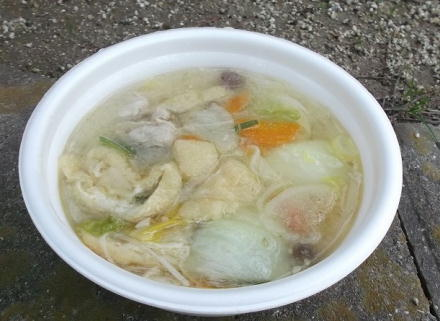
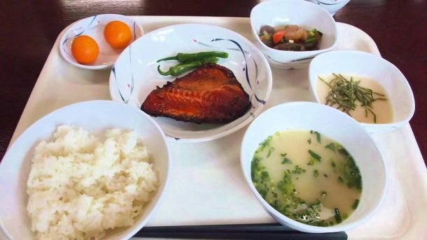
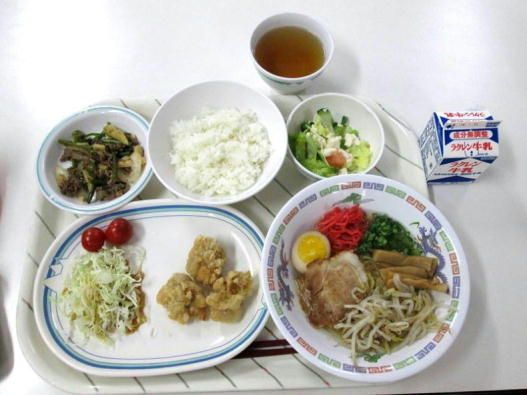

| 自衛隊のごはん 陸海空うらばなし編 | |
| 廣川ヒロト | |
| denmei shobou (2015) | |
自衛隊のごはん 陸海空うらばなし編
はじめに
本作は、自衛隊のごはんシリーズの番外編です。
『目達原駐屯地編』『芦屋基地編』『呉・佐世保編』の統合版でありません。
本編は書き下ろしとなります（附録など一部は再収録）。
陸海空自衛隊で合計二八食の食事をいただきましたが、その中から特に美味しかった献立をピックアップして紹介します。
総合ベストワンを決めるのは難しいので、場所ごと（目達原、芦屋、佐世保、呉）に選びました。
ほか、陸海空自衛隊を取材して感じたことなど、主観に基づいた感想を述べたいと思います。
本書は、取材の経験を元に執筆されていますが、内容についてはフィクションが織り交ぜてあり、事実と異なる場合があります。
本書に登場する地名や肩書きなどは、取材当時のものです。
序 章 自衛隊員の食事事情――カンメシはあくまで非常食
《パーキングエリアで昼食を食べる自衛官》
自衛隊の食事というと、いわゆるカンメシ（戦闘糧食Ⅰ型）が有名かと思います。
普段、自衛隊員はカンメシばかり食べているのでは、と考えるかたも多いでしょうが、カンメシはあくまで非常食で、通常は食べることはありません。
たとえば、訓練などで演習場に移動する際、どうしても調理された食事（平常食といいます）が食べられないときなどカンメシが支給されます。そんなときでも最寄りのパーキングエリアに立ち寄って、ドライブインの飲食店で食事をすることが多いです。民間のお店で食べるわけですから、当然ながら実費で払います。
お昼時の演習場の近くのパーキングエリアなどでは、食事をする自衛隊員の姿は珍しくない光景でしょう。
カンメシを食べない理由は、身も蓋もない言い方ですが、美味しくないから......です。
案外と民間にも出回っていますので、食べた経験のあるかたも少なからずいるはずです。
一般的には「美味しい」という感想が多いのですが、それは物珍しいからだと想像します。
（画像：下が、戦闘糧食Ⅰ型の缶詰タイプ。上が、Ⅱ型のレトルトタイプ）
部隊によっても変わりますが、カンメシを隊員に食べさせるのは、士気の低下に繋がるので可能な限り避ける、という風潮があったりします。
私は四年間、陸上自衛隊に所属した経験がありますが、年間に二～三回ほど、移動の関係などでカンメシが支給されましたが、そんなときでも、コンビニ弁当などの代替が用意されていました。
つまり、カンメシを食べてもいいし、それが嫌なら自腹で購入する、ということです。
あるとき、夕食がカンメシになったことがありました。
古参の士長はカンメシを食べるのが嫌だから、駐屯地の自販機コーナーでカップ麺を二つ買ってきて食事の代わりにしていました。
カンメシの味は、カップ麺二つに劣る、という意味でしょう。
これは一般部隊の話です。
教育隊などでは、訓練の関係で、食事がカンメシになる場合はよくあります。代替が用意されることはまずありません。
一般部隊と教育隊では、事情は異なる、ということです。
教育隊はあくまで公式といいますか、決められたルールを破るのはよっぽどのことがない限りできません。一般部隊は、本音と建て前の部分が少なからず存在すると考えて差し支えありません。
戦闘糧食Ⅱ型はレトルトパックとなります。
通称はパックメシといいます。
平常食に比べると味気ない部分はありますが、カンメシよりは美味しく、人気は高いです。Ⅱ型は、私も演習中に食べた経験があります。
Ⅰ型のカンメシと比べると種類は豊富で、さば味噌煮、さんま蒲焼きなどの和食から、ウインナーカレー、ビーフシチュー、チキントマト煮などの洋食、豚角煮などの中華系メニューもあります。
《お家でカンメシを再現する方法》
手軽にカンメシを味わいたいなら、スーパーに売られているレトルトのご飯と、二～三〇〇円程度の缶詰をセットで購入し、それを食べてみてください。カンメシと同一ではありませんが、近い味だと思います。
非常時であればレトルトのご飯も缶詰もご馳走にみえるでしょう。ですが、それを普段なにもない日に食べても満足できないことが理解していただけると思います。
《有事に備えた備蓄食糧》
毎年、陸上自衛隊はⅠ型の主食缶を一四〇万食、副菜缶（おかず缶）を三〇〇万食調達しています。
なぜ人気のないカンメシをそれほど調達しているのか疑問に思うかたも多いと思います。
これは、備蓄として持っている点に意味があります。もし有事となり、インフラが破壊され、平常食の供給が難しい状況になったとき、また、大規模な災害が発生して、多くの部隊を展開しなければならない場合など、このⅠ型のカンメシが活躍します。
味はいまいちでも、エネルギーの確保はできますから、これさえ食べていれば当面の活動に支障は出ません。実際、阪神淡路大震災のとき、または東北大震災の初動では、このカンメシが自衛隊員の主食でした。
自衛隊は自己完結能力の高い組織なので、炊き出しをする能力もあるのですが、温かい食事は被災者に優先し、自衛隊員はカンメシを食べていたそうです。
Ⅱ型のレトルトについては味は良いのですが、賞味期限が短い（一年間）ので、備蓄食糧としてはⅠ型のほうが都合が良いのでしょう。
またⅠ型は缶切りが必要なタイプで、頑丈ですから、空中投下などの衝撃にも耐えられます。
《カンメシを食べてみた》
とある基地の取材に行った際、広報の責任者のかたから、賞味期限の切れた戦闘糧食Ⅰ型をいただきました。広報史料館に展示されていたものです。
自己責任を承知で夜食として食べてみました。
（画像：戦闘糧食Ⅰ型。主食缶は「しいたけ飯」副菜缶は「鶏肉もつ野菜煮」）
缶には、使用法が記されています。
『沸騰湯中で約二五分以上加熱すれば、通常三日間は喫食できるが、食前にあたためればさらによい。』
ビジネスホテルだったので、コンロは使えません。
洗面台にお湯を張って、四〇分ほど放置しました。
付属の缶切りを用いて開封します。
（画像：戦闘糧食Ⅰ型「しいたけ飯」）
まずは主食缶のしいたけ飯から。
少し固いですがお湯につけていたので、箸でほぐせるレベルにはなりました。どうやら食べられそうです。
イメージとしては、冷蔵庫に丸一日入れていたお米を、常温で二～三時間ほど放置した、というぐらいのものでしょうか。
口に入れてみます。水分が足らず、喉が渇きます。しかし、味は悪くはありません。噛むと、餅米のような粘り気を感じます。もし飢えていれば、ご馳走に思えるに違いありません。
原材料は、精米、しいたけ、油揚げ、醤油、砂糖、食塩、調味料（アミノ酸等）
内容量は三五〇グラム。
（画像：戦闘糧食Ⅰ型「鶏肉もつ野菜煮」）
こちらは副菜缶となります。
醤油ベースで甘辛い味付けです。濃い目です。こちらも喉が渇きます。
缶の上部には鶏肉ともつ、下部には、細切りのコンニャクとタケノコが入っていました。
原材料は、鶏肉、鶏もつ、板コンニャク、たけのこ、醤油、砂糖、食用油、唐辛子、調味料（アミノ酸等）
内容量は一四〇グラムです。
久しぶりに食べてみましたが、思ったよりも美味でした。
結構、ボリュームもあって満腹感もあります。
これを毎食口にすることを想像するとうんざりしますが、時々なら問題ないでしょう。
缶詰の大きさはそれぞれ違うので、食べた後は重ねて、ひとつにまとめることもできます。
戦闘糧食にはⅠ型のカンメシやⅡ型のレトルトタイプのほか、乾パンもあります。
乾パンは、カンメシに輪を掛けて人気がありませんでした。
自衛隊は土日が休みですが、駐屯地内の寮には部屋ごとに何名か残らないといけません。不測の事態に備えて、ということです。残留人員といいます。
駐屯地の夕飯は一七時からなので、夜はどうしてもお腹が空いてしまいます。残留人員の場合は外出は不可ですから、お腹が減ったから夜食をコンビニに買いに行く、ということもできません。
そんな空腹時でも、乾パンには誰も見向きもしませんでした。
大東亜戦争の戦記系の書籍を読んだりすると、特にニューギニア戦線などは、乾パンが非常に重要なアイテムとして登場します。乾パンでも、飢えていれば美味しいと感じるのでしょう。
乾パンを久しぶりに食べてみようとスーパーで買ってきました。
早速食べてみて、感想なんですが、うーん......。
不味い、と書こうと思ったのですが、実は結構美味しく感じました。
パサパサしてて、喉が渇くのと、ずっと食べていると顎が疲れるし、味にも飽きが来ますが、想像よりも美味い。胡麻の風味がいいです。
（画像：乾パン入り味噌汁）
乾パンは普通に食べると飽きてくるので、料理に使ってみることにしました。
まずは味噌汁に入れてみます。
インターネットで検索してみると、この食べ方はポピュラーでした。
乾パンを投入したばかりのときは固いですが、時間がたつとふやけてきて、麩のような食感になります。
（画像：乾パンを振りかけたミートソースパスタ）
つぎに、乾パンを砕いてからミートソースパスタに振りかけてみました。
これはオススメです。美味い。
砕いた乾パンは、ミートソースやチリコンカンのようなトマト系の料理とは相性がいいです。クラッカー代わりですね。
コーンスープに入れても美味しいようです。
乾パンは料理にも使えるので、非常食としていくつか常備していてもいいのではないでしょうか。
古い乾パンから順次料理に使っていけば、無駄も出ません。
《喫食申請は面倒》
カンメシはあくまで非常食で、普段、自衛隊員は、駐屯地（基地）内にある隊員食堂で食事をします。
とはいっても自衛隊員であれば全員が隊員食堂で喫食できるかというとそうではありません。
既婚の自衛官、もしくは幹部自衛官は駐屯地（基地）の外に住んでいますから、隊員食堂での喫食は不可となります。隊員食堂は営内者（自衛隊内の寮に住む隊員）のための施設です。
既婚自衛官、および幹部自衛官の昼食は、弁当を持参するか、自衛隊敷地内の委託売店や委託食堂で食べることになります。
申請して、指定の金額を支払えば、既婚自衛官や幹部自衛官でも隊員食堂で喫食できます。
自衛隊も役所ですから、申請の方法が面倒で、それを嫌ってあえて隊員食堂で食べない、という隊員も多いようです。
陸上自衛隊と航空自衛隊では、食堂は曹士用と幹部用に分かれています。
海上自衛隊は、佐世保と呉しか知りませんが、独立した幹部食堂はありません。幹部自衛官も隊員食堂で喫食します。
呉に限っていうと、食堂の奥まった場所に衝立があり、その衝立の内側は幹部卓となっていました。
出される料理ですが、階級によってメニューが変わる、ということはありません。
隊員食堂には食券のようなものがあるわけではなく、つまり食べたいものを選べるわけではありません。メニューは専属の栄養士（技官で防衛省の職員）が決めます。
配食はセルフサービスで、まず食堂に入り、トレイや箸をとって、ジャーやバッカンなどからご飯を注いで、汁物や主菜や副菜の皿をとる、という段取りになります。
食べ終わると、残飯はひとつにまとめて席を立ち、食堂の出口に向かいます。残飯を捨て、食器を下げて、外に出ます。
《自衛隊員は食べるのが早い》
以下は、書籍では触れませんでした。
ひとにもよるし、場所にもよるからこれが絶対に正しい、というつもりはありませんが、自衛隊員は総じて、食事のスピードが速い傾向にあります。
およそ五分。長くても一〇分ぐらいでしょうか。流し込むようにして食べます。
職業病......かもしれません。
特に新隊員の教育隊では、味を確かめる余裕は一切ありません。部隊配属になっても、一年間は下っ端ですから、忙しい日々が続きます。
二年目あたりになると余裕も出てくるのですが、パブロフの犬ではありませんが、食べ物を前にすると、とにかく早食いします。
また、職業自衛官の道を選ぶ場合（曹や幹部）は、改めて指定の教育隊に入校することになります。そこでも忙しい日々が待っています。一般部隊と教育隊とでは雰囲気は全く異なっています。
一般部隊でも、演習時には引き締まった空気（冗談さえ通じない）になりますが、普段はそれほど厳しいわけではありません。根底に規律があるのは確かですが、ちょっとした不都合などは大目にみられる場合もあります。
寮の中では飲酒はできませんが、隠れて飲むことは可能だと思います（可能です、と断定するとおかしくなるので〝思います〟という、あくまで個人的な感想に留めておきます）。
けれど教育隊では、大目に見られることはまずありません。
禁止されている事項があれば実際に禁止です。寮の部屋で飲酒はできないし、朝寝坊するのも無理です。
ちなみに、既婚自衛官でも幹部自衛官でも、教育隊では営内に居住しますから、隊員食堂で喫食できます。
以上の理由から、自衛隊員は早食いが当たり前になっています。
だから喫食中の隊員に「隊員食堂の食事は美味しいですか？」と聞くのは、少し抵抗があります。
出されるものを単に食べるだけだから美味しいかどうかはあまり考えない――というのが、自衛隊員の本音でしょう。
そんな機械的な食事ですが、忙しすぎて食事抜きになる、という例はほぼありません。幹部自衛官は未経験のために分かりませんが、曹士隊員にいたっては、どんなに忙しくても、食事だけはしっかりと用意されます。
食は士気に直結している部分だからでしょう。もちろん有事の際は二の次になる可能性が高いとは思いますが。攻撃されているのに、今から飯を食べるからあとにして、とは言えませんよね。
実戦ではないですが、演習時には計画が予定通りに進まない場合もあるので、そんなときは食事時間が多少前後することもあります。
《芦屋基地編を読んだ忌川タツヤさんの素朴な疑問》
航空自衛隊の芦屋基地の取材の際、隊員食堂で喫食していた隊員に好きなメニューなど、食事についての感想を尋ねました。
自著からですが、引用します。
曹士隊員の皆さんにも話をききたい、ということで二日目の昼、お食事中のところをお邪魔した。
室長（渉外室長の中村三佐）と私は、配食台に近い席に座っているグループに目星をつけた。年齢はみな、若そうだ。
室長が声を掛ける。
「ちょっと質問してもいいかな。いま、自衛隊のごはんということで取材をしているんだけれども、あの、食事が美味しいかとか、三食のうちでどの食事が楽しみだとかさ、聞かせてくれないかな」
「お断りします！」
室長は口をあけたまま、肩をがっくりと落とした。無言のままきびすを返す。
続いて、隣のテーブルに移動。
「おお、椎野一曹。ちょうどよいところにいた。ちょっとさ、話を聞かせてくれないかな」室長は親しげに声をかける。
椎野一曹は所属が西部航空施設隊で、車両整備の仕事をしている。室長は元々職種が施設なので、面識があるのだろう。
椎野一曹は語る。「肉料理が好きですね。あまり魚は......」
 （画像：右で熱弁をふるうのが渉外室長の中村三佐）
（画像：右で熱弁をふるうのが渉外室長の中村三佐）
「よし、つぎいってみよう！」元気を得た室長は次のグループに目を付けた。
まずは室長が熱弁を振るう。
「食事中すみません。いま、自衛隊のごはんをテーマに本を書いているんだけどさ。ちょっと話を聞かせてくれないかな。ちょっとだけでいいから」
私は、画像左手前の女性自衛官に尋ねた。ちらっと階級章を確認する。三曹である。
「好きなメニューを教えてもらえないでしょうか？」
「好きなメニュー。うーん。うーん......。鶏肉ですね。鶏肉が好き」
「嫌いなものは？」
「言っていいんですかね？ ......いわし」
ほかの隊員は一様に好きなものは「カレー」とのこと。
『自衛隊のごはん 航空自衛隊 芦屋基地編』より
ライブドアブログが運営する電子書籍レビューサイト『つんどく速報』のライターをしていた忌川タツヤさんに、初稿を読んでいただきました。
忌川さんは意外そうな顔で、こう言いました。
「室長って、三佐ですよね。少佐ですよね。上官ですよね。その上官が聞いているのに『お断りします！』って変じゃないですか？」
もっともな疑問といえるかもしれません。
自衛隊は階級社会であるのは間違いありませんが、階級が上であれば、無理難題が全て通る、というわけではありません。
この場合は空自だから、という部分も関係しているのかもしれませんが、自分は陸自の経験がありますが、この三曹の『お断りします！』というのは別に変でもなんでもありません。
同じ部隊同士だと、断りにくい雰囲気ではありますが、部隊が違えば階級はあまり関係がないのです。
民間の会社でもそうですが、やはり部署が違えば、平社員が課長に対して敬意は払うけど、指示に従う義務はないわけです。
海自にも取材しましたが、この点については特に陸自や空自と違う、という感じは受けませんでした。
《民間人が自衛隊の隊員食堂で食事をすることができるか？》
一般のひとが自衛隊の隊員食堂で食事をするのは難しい話ではありません。
部隊見学などで駐屯地内に入る場合、スケジュールで昼を挟んでいたりしたら、広報が食事をどうするか聞くはずです。
部外者喫食ということで、実費で、昼食の場合は四百円前後かかりますが、費用を払えば食事はできます。だけど、自衛隊の食事を食べてみたいから、明日の昼に一食だけよろしく、ということはできません。あくまで副次的なもの、とお考えください。
目達原駐屯地に食事の取材を申し込んだとき、許可が出るまで一週間ほどかかりました。
広報幹部の一尉によると、ときどき広報室に「食事をしてみたい」という電話がかかってくるそうです。
もし、複数名で、自衛隊の広報側のスケジュールが空いているなら対応はするけど、個人の場合は断るそうです。
私も個人でしたが、喫食が許可されたのは、本の取材だから、という理由ではなく、自衛隊ＯＢだから、という部分が大きいようでした。
部隊見学については、駐屯地や基地の広報に電話をかけて交渉すれば対応してくれるはずです。
もしくは最寄りの地方協力本部に問い合わせる、というのも一つの方法です。
駐屯地見学の人数ですが、最低でも三名程度は必要だと思います。一名、もしくは二名だと、スケジュールの都合が合わない、ということで断られる可能性が高いかもしれません。
第一章 シリーズを通して、美味しかった自衛隊のごはんは？
《美味かった自衛隊のごはん》
陸上自衛隊の目達原駐屯地では六食、航空自衛隊の芦屋基地では九食、佐世保と呉では十三食いただきました。
合計二八食です。その中から、一番美味しかった食事を紹介します――と言いたいところですが、総合的にベストワンを決めるのは難しいので、場所ごとに選びたいと思います。
あくまで個人的な見解です。
まずは陸上自衛隊の目達原駐屯地から。
（画像：目達原駐屯地の三日目の昼食）
三日間にわたる目達原駐屯地の喫食体験で一番美味しかったのは、取材最終日の昼にいただいたこちらの食事です。
内容は次の通り。
――――――――
・梅じゃこごはん
・肉豆腐
・いか団子汁
・ところてん
・わらび餅
・コーヒー牛乳（もしくは牛乳、二〇〇ｍｌ）
――――――――
これで一二〇〇キロカロリーほど。
メインは肉豆腐で、甘辛いスキヤキふうの味付け。おかずとしては最適でした。
梅じゃこご飯は、梅の酸味がきいていて、甘辛い味付けの肉豆腐との相性は抜群でした。
いか団子の入ったスープは薄口でさっぱりしており、主菜の肉豆腐も、炊き込みご飯も味付けが濃いめだったので、口直しにちょうど良い案配でした。
（画像：目達原駐屯地の二日目の昼食）
次点は、二日目の昼食として食べたポークステーキです。
内容は次の通り。
――――――――
・白ごはん
・豚肉ステーキ
・卵とじスープ
・かりかりじゃこサラダ
・ゴールドキウイ
――――――――
およそ一二〇〇キロカロリー。
豚肉ステーキはあらかじめ切ってから焼いているので、ステーキというより、薄い衣のついた揚げ物みたいでした。
片栗粉がまぶしてあります。
ステーキを想像していると期待外れですが、こういうものだ、と割り切れば外れとはいえないランチでしょう。
《陸海空で人気のあるのは肉系》
陸海空自衛隊の調理に携わる方々にお話を聞きましたが、共通しているのは『魚は不人気』というものでした。
その代わり、肉系は人気があります。自衛隊は定年が早い（曹、尉官で、五三～五四歳）ので、民間企業に比べると年齢層が低い傾向にありますから、そんな点も関係しているのでしょう。
肉類以外で人気があるのはやはりカレーとなります。
目達原駐屯地では、珍しいことに朝カレーというものが献立にありました。
目達原駐屯地のある日の朝食を紹介します。
――――――――
・白ごはん
・朝カレー
・シーザーサラダ
・甘夏缶盛り合わせ
・牛乳（二〇〇ｍｌ）
・納豆
・福神漬
・楽京漬
――――――――
六〇〇キロカロリーほどで案外と低カロリーです。
カレーと納豆の組み合わせは珍しいですが実際に食べてみたところ、とてもマッチしていました。
《陸自では横浜駐屯地の食事が美味しいらしい》
後日、某地方協力本部の某広報班長に『目達原駐屯地編』を献本したところ、首を傾げながら「目達原は、特に食事が美味しいという話は聞いた記憶はないです」とのコメントでした。
私自身が、日本全国の陸自の食堂を知っているわけではないし、比較対象は十カ所ほどですが、目達原駐屯地の食事はごく標準的な陸自の味かな、との感想をもちました。
陸上自衛隊で美味しいのは横浜駐屯地らしいです。
同駐屯地では、月に一回体験喫食を実施しています。興味があるかたは検索サイトなどで調べてみてください。
《芦屋基地は朝飯が美味しい》
続いては、航空自衛隊の芦屋基地から美味しかった食事を紹介します。
......芦屋基地には怒られるかもしれませんが、三日間の食事の中で美味しかったのは、初日の朝食です。なぜ怒られるのかというと、朝食はほぼ既製品らしいからです。けれど出来合の食品は、昔に比べると味が格段にアップしているのも確かだと思います。
（画像：芦屋基地の初日の朝食）
こちらが恐縮ながら芦屋基地で一番美味しいと感じた食事です。
内容は次の通り。
――――――――
・白ごはん
・油揚げの味噌汁
・レバー煮
・胡麻チキンサラダ
・ポテトベーコン
・生卵
・ちびろく納豆
・牛乳（一八〇ｍｌ）
――――――――
一〇〇一キロカロリー
メインのプレートには、レバー煮、胡麻チキンサラダ、ポテトベーコンの三品が載っています。
それに加えて、生卵とちびろく納豆。豪華ですよね。
たまたまなのかと思って献立を見てみると、たいていこんな感じの朝食でした。
朝からこんな食事をいただけるのは幸せです。
参考までに二日目の朝食はこんな感じでした。
・白ごはん
・里芋味噌汁
・がめ煮
・辛子明太子
・湯豆腐
・牛乳（一八〇ｍｌ）
美味しかったけど、がめ煮はまるっきり既製品でした。初日の朝食で既製品だったのはレバー煮......ぐらいでしょうか。ポテトベーコンや胡麻チキンサラダは、多少は手作り感がありました。
最終日の朝食は、初日に負けず劣らずの豪華さでした。
画像付きで紹介します。
（画像：芦屋基地の最終日の朝食）
内容は次の通り。
――――――――
・白ごはん
・厚揚げ味噌汁
・春菊大根浸し
・切り干し大根煮
・すり身揚げ（パック）
・コーヒー牛乳（二〇〇ｍｌ）
・ちびろく納豆
・生卵
――――――――
九四〇キロカロリー
ちびろく納豆と生卵がついているのは初日と同じです。
こういうのが好きというのは、つくづく貧乏舌だな、と痛感します。
朝食ばかり褒めるのも悪いので、朝食を除いたお昼と夜の食事の中から一食だけ紹介しましょう。
初日の昼食となります。
（画像：芦屋基地の初日の昼食）
内容は次の通り。
――――――――
・白ごはん
・つぼ鯛みりん焼き
・なめこ汁
・牛すじと野菜の煮込み
・とろろ
・きんかん
――――――――
九三四キロカロリー
つぼ鯛みりん焼きはこってりとした味付けでご飯のおかずによく合いました。
副菜の「とろろ」「牛すじと野菜の煮込み」も、定食屋さんの一品料理みたいで美味でした。
あっさり系で正直に言うと若干物足りない感じでしたが、食事というのは少し足らないぐらいが丁度良いのかもしれません。
《空自は洋食が多いと思ったら......》
航空自衛隊の食事は、意外にも日本食らしい組み合わせが多いと感じました。
俗に「陸自はおにぎり、海自はカレー、空自はハンバーガー」といわれるので、空自は洋風が多いかと漠然と考えていたのですが、メニュー自体は陸自とそう大きな違いは感じられませんでした。
陸自と違う点があるとすれば、おおらかな気風......でしょうか。
芦屋基地では主に幹部食堂で喫食したのですが、陸上自衛隊の幹部食堂の場合、入室する際は立ち止まって帽子を脱ぎ、最上級者の席（駐屯地司令）に向かって敬礼をします。
室内、かつ無帽時の敬礼ですから、右手の先を目尻につける挙手の敬礼ではなく、十度の敬礼という、お辞儀のような敬礼です。
たとえ司令の姿が見えなくても、その席に向かって頭を下げます。
ほとんど慣習化していますが、芦屋基地ではそのような光景は一度も見ませんでした。食堂が広くて、入口から最上級者の席が見えない、というのも関係しているかもしれません。
芦屋基地の渉外室長の中村三佐にその点を聞いたところ「少なくとも芦屋ではそのような最上級者の席に向かって敬礼する、というのはやっていません」とのことでした。室長は続けて「幹部候補生学校では実施してましたよ」と付け加えました。
なので航空自衛隊だから、というわけではなく、場所によって違いがあるのかもしれません。
ただ、空自は階級の差が海自や陸自に比べて緩い、という話は聞いたことがあります。上級者に対する意見具申についても、陸自や海自は難しい（特に海自）けど、空自はそれほど厳しくない、らしいです。
《海自はやっぱり艦艇の食事は美味しかった》
続いて海上自衛隊。
佐世保から始めます。
陸上施設にも隊員食堂があるのですが、そちらは陸自や空自とほとんど違いはありませんでした。大きな違いが一つあるとすれば、金曜日のお昼にはカレーが食べられている点でしょうか。
売店などの委託食堂（民間経営）の日替わり定食も、金曜はカレーが提供される場合が多いようです。
陸自でも、金曜日とは限りませんが、決まった曜日にカレーが出される駐屯地もあります。
食事は、朝は佐世保基地業務隊の隊員食堂、お昼は護衛艦こんごうで食べて、夜は佐世保教育隊の隊員食堂でいただきました。
佐世保地方隊は、敷地が点在しているため、場所ごとに食堂があります。ちなみに呉地方隊も佐世保と同じで隊員食堂は二つ（基地業務隊と教育隊）ありました。
佐世保基地業務隊の隊員食堂での朝食ですが、空自の芦屋基地と比べると見劣りするかな、という気がしました。その分、昼と夜が豪華になっているようです。
夕食は佐世保教育隊でいただきましたが、ボリューム満点の、いかにも自衛隊の食事、という内容でした。
佐世保教育隊の二日目の夕食を紹介します。佐世保で六食いただいた中では、ベストツーの美味しさでした。
（画像：佐世保教育隊の夕食）
内容は次の通り。
――――――――
・白ごはん
・ジャンロ煮
・キャベツの千切り
・ナポリタンスパゲティ
・コンソメスープ
・マッシュポテトサラダ
・野菜ジュース
――――――――
一一六三キロカロリー
ジャンロ煮というのは煮豚のことです。
甘辛い味付けでごはんのおかずにバッチリでした。脂っこくなくて（作り方が独自なのかも）、健康には良いと思います。
副菜はナポリタンスパゲティとポテトサラダで定番の組み合わせですね。
佐世保の計六食のなかでの美味しさベストワンは、やはり護衛艦こんごうの食事です。
こうごうでは二食食べましたが、二日目は金曜日でカレーでした。カレーは次章で紹介することにします。
（画像：こんごうの昼食）
内容は次の通り。
――――――――
・白ごはん
・トンカツ
・卵とネギの餡
・鶏肉と蓮根の煮物
・コールスローサラダ
・若布とネギの味噌汁
・冷や奴
・牛乳（二〇〇ｍｌ）
・バナナ
――――――――
トレイには六カ所のくぼみがあって、どこに何を入れるかは食べるひとが決めることができます。ごはんをたくさん食べたければ大きなくぼみを使うし、ダイエット中のひとは少なめに、という具合です。
画像は、カツとじ定食ふうですが、カツをごはんの上にのせればカツ丼になります。
（画像：こんごうの昼食）
こちらはカツ丼ふう。護衛艦の内部を案内していただいたミサイル士の廣井三尉の分です。大盛り。若い士官のかたでしたので、食欲旺盛です。
ブラウザゲームの『艦これ』とかプレイしていそうな雰囲気でした。『艦これ』のことを聞こうと思っていたのですが、機会を逃してしまって聞きそびれました。
出航するとネットには繋がらないので、ブラウザゲームは厳しいかもしれません。
肝心の味ですが、カツに関しては肉厚でジューシー、揚げたてホヤホヤ、とまではいきませんが、衣もサクサクしており、調理してからそれほど時間は経っていませんでした。食べた時間が一一時過ぎで、最初のほうだったのも関係しているでしょう。
味は全体的に濃いめで、自衛隊の食事らしからぬ味付けでした。
陸上施設の隊員食堂は、どちらかというと薄味が多いです。万人受けするテイストで、味が薄かったら各自卓上調味料でアレンジしてくださいね、ということなのでしょう。
《潜水艦の食事は美味しかった》
次は呉地方隊です。
呉では、七食いただきました。六食は基地業務隊の隊員食堂で、一食は、潜水艦いそしおの艦内で食べました。
潜水艦は、全自衛隊の中で食費に充てられる予算が最も多いとのこと。また、部外者が食べに来るのはあらかじめ分かっているわけですから、さぞ美味しい食事を口にできるだろうと楽しみにしていました。呉で美味しかったベストワンは、ダントツで潜水艦の食事です。
潜水艦の前に、基地業務隊の食事の中で美味しかった献立を紹介します。水曜日の夕食、それから木曜、金曜日でしたので、カレーもいただきました。カレーは例によって次章に譲ります。
（画像：呉基地業務隊の夕食）
内容は次の通り。
――――――――
・白ごはん
・豚のマスタード風味焼き（ホイル焼き）
・ジャガのチーズ焼き
・糸コンニャク炒め煮
・海藻サラダ
・ヌードルスープ
――――――――
一一五五キロカロリー
主菜の豚肉のホイル焼きは、甘辛い味付けでした。
マスタード風味焼とありますが、言われなければ分からない程度の風味で、辛いわけではありません。
呉基地業務隊の朝食は、佐世保基地業務隊よりはボリュームはありましたが、どんぐりの背比べ――といったら悪いですが――大きな違いはありませんでした。
どちらにせよ、航空自衛隊の芦屋基地の朝食と比べると、やや質素かな、とは思います。
改めまして、潜水艦いそしおで食べた食事を紹介します。
（画像：潜水艦いそしおの昼食）
内容は次の通り。
――――――――
・白ごはん
・若布スープ
・鶏肉の揚げ漬け
・レタス
・南瓜と挽肉の豆板醤炒め
・明太子ビーフン
・オクラ納豆
・しば漬け
――――――――
オクラ納豆としば漬けは大皿に入った状態でテーブルに置かれるので、セルフ配食となります。
メインの鶏肉の揚げ漬けは、一人前五個でした。
鶏肉のから揚げに、甘辛いタレを絡めた料理です。おそらく焼き鳥のタレでしょう。市販のものなのか、いそしおの調理員長が自作したのかは聞きませんでしたが、もし市販のタレを使っているなら、甘みを更に追加していると思います。かすかに白味噌の風味も感じました。
（画像：鶏肉の揚げ漬け）
白ごまがまぶしてある点もポイントです。甘辛い風味に、ごまの香ばしさが加わって、いくらでもごはんが食べられそうでした。
これを口にしたあとでは、普通のから揚げが物足りなくなります。難しいものではないので、家庭でも作れます。
参考までに、焼き鳥のタレのレシピを記します。
鍋に次の材料を入れてください。分量は割合と考えてもＯＫです。
・醤油 大さじ五
・砂糖 大さじ三～五（お好みにより加減）
・味醂 大さじ一
・お酒 大さじ一
砂糖は、中双糖などを混ぜると、甘みが増します。隠し味の白味噌はお好みで（入れすぎないように注意してください）。
甘いのが苦手なかたは、砂糖は減らしてください。
コンロの火をつけて、焦がさないように注意しながら煮立てます。
ある程度水分が蒸発し、粘度が高まったら火を止めて、白ごまを入れます。たっぷり入れましょう。
鶏肉のから揚げを投入し、お鍋を軽く揺すります。から揚げにタレが絡んだら皿に盛りつけて完成です。
是非お試しください。
第二章 自衛隊のカレーが美味しい理由
《早飯という制度がくせもの》
自衛隊のカレーは美味しいと評判です。
理由は大きくは二つあります。カレーは時間が経っても味が損なわれないから。もう一つは、きちんと分量通りに作られているから。
自衛隊の食堂には早飯という制度があります。当直や警衛勤務の隊員向けで、三〇分から一時間ほど早く食べることができます。
調理員の食事は、早飯の前に済ませますから、昼ご飯であれば、だいたい一〇時半～一一時頃にはすでに全ての調理が終わっています。
揚げ物は、ウォーマーに保温され、汁物は湯煎されるか、もしくは弱火に掛けられたままになります。
食事は、一部の例外はありますが、できたてが美味しいですよね。
自衛隊の食事、特に陸上施設の隊員食堂では、できたてホヤホヤというものはまず提供されません。揚げ物だと、衣が水分を吸って、しんなりしてしまったり、汁物だと、具が煮えすぎる、という場合もよくあります。
保温などについては、各部隊、知恵を凝らしていると思いますし、冷え切ったものが出される例はないのですが、調理してから時間が経った食事が提供されているのは事実です。
とはいっても、たとえば煮物とかは味が染みこんで美味しくなったりもします。
カレーも同じです。カレーも、できたてよりも、少し煮詰めたほうがスパイスが緩和されたり、具材の角がとれてルウに混ざったりして美味しさがアップしますよね。
美味しさの理由その二ですが、当たり前ですが、分量がしっかりと守られている点。
カレーの場合、料理がある程度できるひとって、アバウトに作る場合が多くて、カレールウのパッケージに記してあるレシピ通りに作るひとは少数派だと思います。
分量を守ってレシピ通りに作れば美味い――これをひとにいうと「当たり前」と指摘を受けますが、実際に作ってみればよく分かります。分量や作り方を忠実に守れば、驚くほど美味しいカレーができあがります。
自衛隊のカレーはできあがってから湯煎にかけますから、水分も若干蒸発して、味は更に濃厚になります。
隠し味も多いです。ウスターソースやケチャップは普通ですが、部隊によってはコーヒー牛乳、チョコレート、はたまた福神漬けの汁を入れたりする場合もあるようです。
カレー粉が強いので、何を足しても少量ならば隠し味として成立するのでしょう。カレールウだけだと、やはり少し物足りないかな、という気がします。
話は戻りますが、早飯のせいで時間が経って風味が損なわれるメニューは、味はどうして落ちてしまいます。
護衛艦などの艦艇の場合、早飯の制度はありません。食事時間でも、隊員は基本的には勤務についていますから、交代制で食べます。
すべての護衛艦というわけではないと思いますが、こんごうの調理員長は、料理は一度に作るのではなく、何度かに分けて作る、と言っていました。
陸上自衛隊の給食では、分けて作る、ということはやっていないはずです。一度にまとめてつくって保温する。これが基本でしょう。
あと、艦艇は、調理員長の裁量が大きくて、栄養士が各艦艇に乗り込んでいるわけではありません。大まかな献立は栄養士さんが作成しているようです。しかしそれを守るのもアレンジするのも調理員長次第でしょうか。
陸自や空自のカレーも美味しいですが、海自は伝統が関わってきますから、その分美味しさにも反映されるのかな、と想像します。
海自だから美味しい、というわけではなく、調理員によって違うのですが、海自のほうが、給養、調理に、矜持を持っているひとが多いと感じました。
陸自の場合、給養は、専門教育も存在しない、というのもありますが、どうも軽視されている傾向があります。部隊の風潮がそのような感じだと調理員は矜持を持ちようがないですよね。もちろん、陸自の調理員が全部そう、と言っているわけではありません。
某地方隊の広報係長曰く「艦艇の食事の美味しさは、調理員長によって決まります。調理員長が他の船に転属になると、それについていく隊員もいるほどです」
陸自ではあり得ない話です。なので、海自の調理員はやりがいのある仕事なのでしょう。
前置きが長くなりました。では、肝心のカレーを紹介します。
まずは佐世保基地業務隊のカレーから。私は護衛艦こんごうで食べたので、広報係の女性自衛官に画像だけを撮っていただいたものとなります。
（画像：佐世保基地業務隊の金曜カレー）
内容は次の通り。
――――――――
・白ごはん
・挽肉カレー
・かに爪フライ
・ミックス野菜
・ゆで卵
・りんご
・楽京漬
・福神漬
・牛乳（二〇〇ｍｌ）
――――――――
一三四三キロカロリー
豪華ですね！ カレーにサラダ、揚げ物、ゆで卵に牛乳、デザートにはリンゴまで付いています。
佐世保基地業務隊の朝食は空自の芦屋基地と比べると、ずいぶんと質素だったと散々に書きましたが、佐世保は予算配分が、昼と夜に振られているのかもしれません。
続いては呉基地業務隊の隊員食堂の金曜カレーです。こちらは実際に食べました。
（画像：呉基地業務隊の金曜カレー）
内容は次の通り。
――――――――
・白ごはん
・ビーンズカレー
・ナン
・チョリソー
・グリーンサラダ
・乳酸菌飲料
・楽京漬
・福神漬
――――――――
一二五七キロカロリー
カレーは、中辛と辛口が選べました。画像のカレーは辛口です。
口の中にぴりっとくる辛さで、激辛というほどではありません。
ビーンズカレーですが、お豆は申し訳程度でした。カレーのルウは自分で注いだので、実はお豆は鍋の底のほうに溜まっていたのかもしれません。
護衛艦こんごうと比べると、カレー自体の美味しさ、スパイシーさはこちらが勝っていると感じましたが、副菜の充実度、全体的な満足度ではこんごうに軍配が上がります。
続いては、護衛艦こんごうのカレーを紹介します。
（画像：護衛艦こんごうの金曜カレー）
内容は次の通り。
――――――――
・白ごはん
・ビーフカレー
・目玉焼き
・レタスとトマトのサラダ
・アスパラの豚肉巻フライ
・楽京漬
・福神漬
・グレープフルーツ
・牛乳（二〇〇ｍｌ）
――――――――
サラダ、揚げ物に目玉焼き、そして牛乳とデザートのグレープフルーツ。大まかには、基地業務隊の隊員食堂の金曜カレーと同じ構成です。
味については、サラサラ系で、中辛でした。美味しいけれど、できたばかりだったらしく、具材に味が染みてない気もしました。
カレーはドロドロ系が好き、というひともいますから、好みの問題もあるでしょう。私はどちらのカレーも好きです。一般的にはサラサラ系は、本格的な感じでしょうか。ドロドロ系は家庭的な雰囲気です。
原価は四〇〇円強ほどのようです。もし同じ内容をお店で出すとしたら千円は超えるでしょう。
《こんごうカレーを家で作ってみる》
護衛艦こんごうの調理員長から、レシピを教えていただきましたので家で再現してみました。
レシピは巻末にあります。
ブイヨンの分量についてはアバウトですが、粘度を見ながら加減していただければと思います。
家で作ってみましたが、サラサラ系のカレーでした。粘度が欲しいひとは、カレールウを増やしてください。
見た目は、ごく普通ですが、ウスターソース、トンカツソース、蜂蜜、牛乳などの隠し味がカレースパイスと程よくブレンドされて、カレーの美味しさを引き立てていると感じました。
三〇分程度で完成しました。もう少し煮込んだほうが、野菜の角が取れて旨味も増すと思います。
カレールウですが、潜水艦いそしおの調理員長によると、自衛隊はたいてい「S&B ディナーカレーフレーク」を使用している、とのことでした。可能ならば「S&B ディナーカレーフレーク」を使用したほうが、味の再現度は高まるでしょう。
《喫茶フェニックスのカレーライス》
この章の最後として、佐世保地方隊の倉島庁舎にある委託喫茶店『フェニックス』のカレーライスを紹介します。
（画像：喫茶フェニックスのカレーライス）
値段はサラダ付きで五一〇円です。
自衛隊の敷地内にある喫茶店とはいえ、主役はこんごうでしたので、味のほうは書籍には書きませんでした。
感想としては、紛れもなくこれはカレーライスであり、それ以上でも、それ以下でもない......というものです。
家庭的な味わい、とでも申しましょうか。
持ち帰ってビジネスホテルの部屋で食べたので、それも関係しているかもしれません。
こんごうのカレーとどちらが美味しかったか？ すみません、フェニックスのオーナー様。こんごうのカレーのほうが美味しかったです。
第三章 佐世保の護衛艦カレーナンバーワングランプリにて
《護衛艦のカレーを食べ比べる》
二〇一四年一二月、長崎県佐世保にて、第三回ＧＣ１（護衛艦カレーナンバーワン）グランプリが開催されました。
これは、海上自衛隊の護衛艦のカレーを食べ比べてどれが美味しいか投票しよう、という催しです。
第一回は二〇一三年十二月に佐世保にて開催され、第二回は翌年の四月に横須賀で催されました。
（画像：第三回、護衛艦カレーナンバーワングランプリ会場）
横須賀については分かりませんが、佐世保に関しては、主催や企画は地元商店街組合で、海上自衛隊は共催という形になりますが、あくまで協力しているに過ぎないそうです。
参加には整理券が必要でしたが、佐世保地方総監部の広報係長にお願いして整理券を取り置きしていただきました。
当日の整理券も、多少は用意されていたようです。
護衛艦七隻、プラス陸自の相浦駐屯地で、八種類のカレーが提供されました。
予定では一〇種類でしたが、二隻（くらま、すずつき）は業務のために不参加でした。
朝のうちに博多から高速バスにのって佐世保を目指します。昼前には佐世保に到着し、グランプリが行われている会場に足を運びました。会場で広報係長から整理券をいただき、早速列に並びます。
広報係長によれば、当日用意されたカレーはおよそ三〇〇〇食とのことでした。
（画像：カレーの内容物）
会場の隅には、カレーの内容物についての看板がありました。
隠し味まで公表しているのは、アレルギーに配慮して、だと思います。
カレーの隠し味としては、以下のものが入っているようです。
・桃 ・バナナ ・リンゴ ・ヨーグルト ・焼肉のたれ ・デミグラスソース、など。
参加艦艇、参加部隊は以下となります。
・こんごう ・ちょうかい ・第２掃海隊 ・あけぼの ・あまくさ ・きりさめ ・しまかぜ ・相浦駐屯地（陸自）
（画像：各部隊の自慢のカレー）
カレーは無料ですが、白ご飯は有料です。二〇〇円でした。
お家からご飯を持参したひともちらほらといました。
近くのパン屋さんでパンのみを買ってきて食べていたひとも見かけました。
白ご飯は、順次補充されていたのですが、何度も売り切れになってしまって、中には、カレーのみを食べていたひとも見受けられました。
（画像：護衛艦カレー）
カレーは紙コップに入った状態で配られます。一つはスプーンで三口ぐらいでしょうか。紙コップは八つありますから、これで一食分は十分にあります。三〇〇〇食用意された、というのは八つが一セットで三〇〇〇食ですから、紙コップは二四〇〇〇個という計算になります。
二〇〇円で購入した白ご飯ですが、量は控えめでした。
（画像：護衛艦カレー）
いただきます。
肝心の味ですが――お世辞でもなんでもなく、どのカレーもほんとうに美味い。
どれも甲乙付けがたい。
全体的にスパイシー、かつ甘めでフルーティーな味付けが多い印象でした。
各艦のカレーを紹介します。
広報係長が抱えていたバインダーの内容を要約したものとなります。
・きりさめ 『ビーフカレー』 海外派遣で腕を磨き、各国高官も絶賛。南半球を旅したカレー。
・あけぼの 『ビーフカレー』 香りのよい野菜、肉、フルーツ、スパイスなどを煮込んだコクのある、優しい甘辛さ。
・しまかぜ 『ビーフカレー』 特徴はないのに、この旨さ。
・こんごう 『ビーフカレー』 辛さと甘さのハーモニー。
・ちょうかい 『チキンカレー』 大量の生姜を炒めて作るジンジャーカレー。コクと風味の大人カレー。
・あまくさ 『ビーフカレー（あまくさカレー）』 スパイスの効いた、コクとまろやかなカレー。
・第２掃海隊 『ビーフカレー（南国カレー）』 マンゴー、バナナ、パイン等を使ったフルーツの甘みを生かしたまろやかなカレー。
・陸上自衛隊相浦駐屯地 『野菜たっぷり牛すじカレー』
参加予定だったすずつき、くらまのカレーも紹介します。
・すずつき 『チキンカレー』 チキンを用いて家庭でも簡単に作れる。
・くらま 『ポークカレー（とんちゃんカレー）』 柔らかく煮込んだ二種類のお肉。
《優勝は......？》
食べ終わったあと、スプーンによって美味しかったカレーを投票するシステムです。私はこんごうに投票しました。
ここだけの話ですが、こんごうのカレーが特別に美味しかった、というわけではありません。どれも美味しい。けどあえて選ぶとしたら、取材をさせていただいた関係もあってこんごうに決めたに過ぎません。
グランプリの結果――なんと、こんごうのビーフカレーがナンバーワンでした。
これは恐らく、邪推かもしれませんが、知名度の関係ではないかと思います。
八種類のカレーから一番を決めるのは難易度が高い。つまり、八番目のカレーを食べる頃には、一番目のカレーの味は忘れているのではないでしょうか。これが二つのうちの一つを選べ、ということなら簡単ですが。
ま、メモを取りながら喫食すればいいのかもしれません。
二位はしまかぜ、三位はちょうかいでした。
意外だったのは、陸自の相浦駐屯地のカレーが、護衛艦カレーと比べても遜色のない美味しさだった点です。
相浦駐屯地のカレーが一位に選ばれたとしても決しておかしくなかったと思います。
次回開催があれば、空自の部隊も参加すれば、注目度は更に高まることでしょう。
《佐世保の海軍カレーのお店》
佐世保には海軍カレーが食べられるお店がありまして、佐世保基地取材の前日にお邪魔してカレーを食べました。
残念ながらお店は閉店になりましたが、このカレーが抜群に美味しかったので紹介したいと思います。Ｆ店、としておきます。
Ｆ店のオーナーは、海上自衛隊ＯＢで、現職のころは、艦艇の調理員長をされていたかたです。
（画像：海軍カレー）
Ｆ店に入り、海軍カレーを注文します。
注文してから気づいたのですが、お店の目玉は「金曜カレー定食」で、これは、海自の艦艇の金曜カレーを再現したもののようです。
私が注文したのは「海軍カレー」で、こちらはルーは「金曜カレー定食」と同じですが、廉価版というか、ランチ向けのオーダーです。
一度通した注文を変更するのは気が引けましたので、注文の変更はしませんでした。
五分ほどで、海軍カレーがやってきます。
野菜と果物の甘みと、スパイスの辛みがブレンドされた、大人向けの味わいのカレーでした。中辛、といったところでしょう。
最初は甘みを感じるものの、食べているうちに辛さが徐々に強まってきます。
お店の壁には、海軍カレーの盛りつけのコンセプトが書かれてありました。
それによると、白ご飯は日本国本土のイメージで、カレーは海を表し、ジャガ芋は島。キヌサヤは二隻の護衛艦で、錨型の人参は海軍のシンボル。
（画像：金曜カレー定食）
こちらは金曜カレー定食です。
食器は、護衛艦で使用されているプレートと同一のもの。
オーナーに事情を話して、後日、画像のみを送っていただきました。
価格は八〇〇円となります。
ちなみに海軍カレーは、ランチ時は五〇〇円で、その他の時間帯は六〇〇円です。
――これが八〇〇円は、破格の値段といえるでしょう。
原価はどんなに低く見積もっても四〇〇円以上はすると思います。
海上自衛隊の取材では、カレーをたくさんいただました。
佐世保では、護衛艦こんごうのビーフカレー。委託喫茶店「フェニックス」の海軍カレー。呉では、基地業務隊の隊員食堂のビーンズカレー。
そのなかで最も美味しかったカレーは、このＦ店の海軍カレーでした。
圧倒的美味しさ、というわけではなく、僅差ではありましたが。
閉店したのは残念でした。
第四章 既婚自衛官のお弁当いろいろ
《業務隊司令のお客さん扱い》
佐世保の取材では、広報係長がつきっきりでしたが、呉は広報が忙しいようで、潜水艦見学の時だけ同行していただいて、あとは呉基地業務隊の先任伍長にお世話になりました。
先任伍長も暇ではないので、ずっと一緒にいたわけではなく、補給科の女性自衛官や、総務科長、はたまた車両科の車両係の自衛官のかたなど、入れ替わり立ち替わり相手をしていただきました。
業務隊司令のお客さん扱いだったので、そのような待遇になったのかな、と想像します。
あまりそこら辺を書くと、他の部隊長に失礼というか、持ち上げすぎるのも良くないと考え、書籍では詳しくは触れていません。
《事務が楽とは限らない》
補給係の女性自衛官とお話をする機会をいただきました。入隊した時期が近く、年代も同じだったので、色々と昔の自衛隊の雰囲気について話が弾みました。
そのかたは事務畑をずっと歩んでこられて、自分は事務とは無縁だったので（事務って楽そうだよな）という感想だったのですが、話を聞いてみると、完全なブラックでした。とはいっても、自衛隊の事務系の仕事が全部同じ、というわけではないと思います。場所や部隊の規模によっても変わるので、あくまで一例としてお考えください。
自衛隊員の勤務時間は通常、八時半から一七時まで。途中、お昼休みが一時間ほどあります。
その女性自衛官のかたは教育隊を終えて部隊配属になって一年間ほどは、毎日二二時まで残業をしていたそうです。残業の理由は事務処理が追いつかないから。
陸自の戦闘部隊などは訓練は厳しいですし、課業時間外に自主トレが奨励される場合もありますが、さすがに毎日二二時まで残業する、ということはありません。
その女性自衛官は既婚者で、営外勤務（基地の外に居住）だったので、隊員食堂での喫食は不可となります。お昼は弁当を持参していました。
「喫食申請して隊員食堂で食べないんですか？」と聞くと「申請の書類が面倒くさいんですよ」との答でした。
用紙に記入し、しかるべき部署に提出してはい終わり、というわけにはいかないようです。喫食申請して隊員食堂で食事をすれば、自前で用意するよりも安価になるはずですが、金銭的な面よりも面倒くささが先に立つ、ということなのでしょう。
たとえば――これは、海自や自衛隊の食事とは直接関係ありませんが、隊舎の窓ガラスが割れたとします。通常ならすぐに新しいガラスをはめ込んで修理する、という段取りになるはずですが、自衛隊だと、修理が終わるまで一ヶ月や二ヶ月かかることはざらにあります。
手続きがシンプルで、即日、現況回復できる組織が理想かもしれませんが、その場合は着服、横領などがはびこるかもしれません。自衛隊も役所ですし、物品は税金で購入されますから、時間がかかるのは仕方のない部分でしょうか。
話を食事に戻します。その補給科の女性自衛官はお昼はお弁当を持参しているのですが、なんとキャラ弁でした。
（画像：ある日のキャラ弁）
さすがに毎日作っているわけではなくて、時々のようです。
子供用と一緒に作るらしいです。しかも作っているのは旦那さんとのこと。
取材に訪れた日は、キャラ弁ではなくて、基地内の売店で購入したお弁当でした。
しかも食べかけだったので、写真は「恥ずかしいから撮らないで」との要望でした。
お弁当を持ってこない営外者の自衛官は、自衛隊敷地内にある厚生センターで食事をします。
厚生センターには民間経営の食堂や喫茶店が営業しています。たいてい一店舗ずつありますが、最近では喫茶店は減少傾向にあるようです。
海自編では、お弁当の画像を幾つか紹介しましたが、次ページの画像は未掲載分です。
基地内の売店で販売しているお弁当となります。
（画像：売店のお弁当）
おにぎりが一つ付属して、価格は四〇〇円です。
真ん中に見えるのは煮込みハンバーグ、右下はマカロニサラダ、右上は揚げ出し豆腐です。
手作り感満載のお弁当です。
ボリュームは控えめですが、美味しそうなお弁当だと思います。四〇〇円は少し高い気が......。
（画像：売店のお弁当）
こちらも売店のお弁当です。
えびフライ、から揚げ、ゴボウサラダ、春雨の酢の物。
女性自衛官向けでしょうか。
自衛隊の敷地内にある民間経営の売店は、街中のお店と違って自由競争が働きませんから、見た目がちょっと残念なことになる場合もあると思います。
あと、海自は、艦艇の運用が基本ですし、艦艇勤務の隊員は、艦艇の科員食堂で食事をします。なので、海自の陸上施設の売店や食堂は利用者が少なくて、そのぶん、お金をかけることができないのかもしれません。
続いては、とある既婚自衛官の持参したお弁当を紹介します。
お弁当の画像が欲しいと要望を出したらすぐに送信してくれたのですが、後日、差し替えということになり、書籍ではボツになりました。
 （画像：ある既婚自衛官のお弁当）
（画像：ある既婚自衛官のお弁当）
お弁当にカップうどん付きで、日常感がよく出ているとは思ったのですが、恐らく奥さんが駄目出しをして、差し替えになったのかな、と想像します。
営外者の自衛官で昼食が、カップヌードルと白ごはんのみ、という例もみた記憶がありますので、それに比べれば十分豪華です。
カップうどんに味噌汁付きというのは、ちょっと汁気が多いがしますが。
（画像：目達原駐屯地の委託喫茶店のシシリアンライス）
《厚生センターの委託喫茶店のご当地グルメ》
こちらの画像は陸上自衛隊の目達原駐屯地内にある喫茶店のシシリアンライスという、佐賀のご当地グルメです。
白ごはんの上に焼き肉をのせて、刻み野菜で覆って、マヨネーズを網状にかけた料理です。
カップスープが付いて、六六〇円となります。
若者向けですね。
（画像：とある基地の委託食堂のトンカツ定食）
場所は伏せますが、こちらは委託食堂の食事です。
撮影のためだけに作っていただいて恐縮しきりでした。
シリーズを読んだひとであればすぐに分かると思います。
ボリュームたっぷりで美味しい。そしてこだわりの食材の割には安価、というお店です。
画像のトンカツ定食は五七〇円でした。
（画像：とある基地の委託食堂のチャンポン）
こちらはチャンポンで四五〇円です。
撮影のために調理していただいたのは確かですが、撮影用だから綺麗に盛りつけている、ということはないと断言しておきます。
食に対するこだわりは強く感じましたので、味も抜群のはずです。
以下は個人的な想像です。
基地内には、コンビニもあるので、裏を返せば、食にこだわりを持っていないと、コンビニの便利さや品揃えには対抗できないのかと思います。
オーナー様は色々と頭を悩ませたはず。
（画像：とある基地の委託食堂のサーロインステーキ定食）
こちらはサーロインステーキ定食。八五〇円です。
このお店に限らず、自衛隊の厚生センターの委託食堂や喫茶店は、以前と比べると売り上げは減っているようです。
外出の規制が緩やかになった、というのもあるし、デフレのせいで、街中のお店のほうが安かったりするので、流れてしまうのでしょう。
せっかく自衛隊の敷地内で営業していただいているので、もっと自衛隊員は厚生センターを利用するべきだと思います。
売り上げが減れば、お店はなくなるかもしれないし、新しいお店も入ってこないでしょう。
第五章 自衛隊のごはんシリーズ裏話
《それぞれの視点》
陸自か空自か海自かは伏せますが、原稿を書き上げて、友人知人の何人かに読んでもらった結果、そこそこの評価でした。
傑作とはいえないけど、決して悪いとはいえない出来、というぐらいのものでしょうか。
忌川タツヤさんにも読んでいただきました。
忌川さんの評価は「面白かった。かなり高い完成度」というものでした。忌川さんはお世辞は言わないし、駄目なものは駄目と正直に述べる性格です。
私は、複数から好意的な評価をもらって自信を持ちました。自分の書いた文章を客観的に見るのは難しいことです。書き上げたばかりの時は特にそうです。
体裁をととのえ、原稿をメールで自衛隊側に送信しました。数日をおき、打ち合わせのために自分が基地に足を運ぶ段取りとなりました。
打ち合わせのための小部屋にいくと、広報の責任者を筆頭に、各部署の責任者が顔を揃えていました。
なんとなく、重い空気が漂っています。
テーブルの上には、印刷原稿が何部もおかれ、付箋がびっしりと挟んでありました。
広報の責任者が言ったのは主に二点でした。
ある部署の責任者が、取材に至る経緯、および内情を書きすぎているので、書き換えて欲しい。それができないのなら全て削除してください、と言っている、とのこと。
もう一点は、内容が（廣川が）どこそこに行って何をした、何を見た、という趣旨になっているので、主題（自衛隊の食事）からは外れている気がする、というものでした。
私は重々しく頷きました。抗弁しようとすればできたのですが、口はつぐんだままでした。
自衛隊の食事の本ということなら、ひたすらにメニューの内容を列挙すれば良かったのかもしれません。最低でも一ヶ月は泊まり込んで、朝昼晩の食事を食べて、写真を撮って味の感想を書けば、それなりのものができたかもしれません。
しかし、そのような構成だと、読み物としては成立しないと考えました。構成について悩んでいたところに、忌川タツヤさんが、ルポルタージュ形式にして書いてみればどうだろう、とアイデアをくれました。もっと会話を書くべきだし、加えて、自衛隊の内側を書いてみたらどうでしょう、との言葉でした。
忌川さんのアイデアは大変優れたものだと思います。非は、それを自衛隊側に伝えなかった自分にあります。
私が口を開けばそれはすなわち言い訳です。どんな理由があるにせよ、それは自衛隊側には関係がありません。
主題から外れている点については、構成変更し、かつ食事以外の部分は、ばっさりと削除する、という段取りになりました。
ある部署の責任者が、取材に至る経緯と内情を書きすぎているので訂正を希望している点については、元々私は「不都合があれば書き換えます」と伝えていました。
確かに少々問題あるかとは思っていたので予想通りといえばそうでした。ただ、私が初稿で書いた内容は事実でしたし、いや、事実だから書いても問題はないと言い張るほど子供ではありませんが、事実を元にして、かなり表現は和らげて書いたつもりでした。
あまりに詳しく書くとまたトラブルに発展するかもしれないのでこれ以上の言及は避けますが、防衛問題や、隊員の規律に関わることではありません。自衛隊の組織としての負の部分とは全く関係がありません。
一個人の、自尊心や自負心を傷つける行為を、私が文章によって行った、という話です。
初稿を読んでくれた知人は「踏み込んで書いているね」という感想でした。だから、第三者の読者にとっては、些細な問題に過ぎないと思います。しかし、当の本人にしてみればとうてい許容できる範囲を超えていたのだろうと想像します。
読み物としての価値を高めたい、という考えに基づいて、もし駄目なら書き換えよう、そんな軽い気持ちでした。
取材対象者は、原稿を自分中心に読む。執筆する側は、読者の視点に注意を向けながらも著者の視点でものをみる、ということでしょうか。
ほかにも色々と指摘がありました。
たとえば――あるところでは食事が美味しいと書いたところ、そのあるところはセールスポイントが食事だけ、と読めるからボツ。
ある部署には担当者が二人いて、その二人でお互いを補いつつ業務を行っている、と書いたところ、場所によっては担当が一人の場合もあるので、そのひとが読むと嫌な気持ちになるだろうからボツ。
ある場所で経験を積んだ者は一人前、と表現したところ、そのある場所以外に勤務している者は一人前ではないと読めるからボツ。
言われてみれば最もなことばかりで、自分の浅慮のいたすところです。視点を変える、ということは文章を書く上ではとても重要だと勉強になりました。
執筆の際、ある程度は配慮したつもりだったのですが、独りよがりになってしまったようです。
《陸海空自衛隊を表す標語》
公式ではありませんが、まことしやかに言われる自衛隊を表す標語があります。有名なのでご存じのかたも多いでしょう。
陸上自衛隊は「用意周到 動脈硬化」
海上自衛隊は「伝統墨守 唯我独尊」
航空自衛隊は「勇猛果敢 支離滅裂」
それぞれの意味ですが、陸自は、とにかくお役所仕事といいますか、何をするにしてもきっちり前もって準備をします。アドリブに弱いともいえます。たとえば陸自が空自と合同でことにあたる場合でも、計画書は陸自の場合、空自の倍になったりするようです。用意を万全にするのは良いことですが、そのせいで小回りが利かない部分もあるでしょう。
海上自衛隊は、旧海軍の人員、装備を受け継いでスタートした、という経緯がありますから、伝統というものに敏感です。金曜カレーもそのひとつです（旧海軍は土曜カレー）。
唯我独尊については、伝統と重なりますが、陸自や空自の存在が眼中にない感じです。陸自、空自は新しく入隊した隊員を「新隊員」と呼称しますが、海自は旧海軍と同じで「練習員」といいます。また、海上自衛隊の幹部候補生学校では「スマートで、目先が利いて、几帳面、負けじ魂、これぞ船乗り」という旧海軍の言葉をそのまま標榜としています。
近年はイジメの問題がクローズアップされていますが、これも悪しき伝統......でしょうか。この点は早急に改善するべき問題です。
陸自でも空自でもイジメは存在するでしょうが、海自は、特に艦艇勤務は閉鎖された空間ですので、その意味では、歯止めが利きづらいのかもしれません。
《陸自に体罰はあるのか》
イジメの話ではありませんが、陸上自衛隊では体罰は存在しない、ということになっています。
かつての日本陸軍は体罰は当たり前で、内務班（寮生活）ではビンタが横行していた、という話はよく聞きます。
陸自の新隊員教育においては、体罰はいっさいありません。その代わり、何かミスをしたりすると腕立て伏せが強要されます。
部隊配属後は、この限りではありません。
私が見た事例なので、それを全体に当てはめるのは乱暴過ぎますが、鉄拳制裁というのは、特に驚くべきことではありませんでした。
当然、先輩が後輩に、ということです。
陸自の営内班は暴力が吹き荒れている、というわけではありませんので、誤解なきようお願いします。
一例だけ紹介します。
私が陸士長になってしばらく経った頃です。
ほんの数ヶ月前に新隊員が部隊配属され、私は下っ端から卒業していました。かといって、私自身もまだ部隊配属されてから一年半ほどです。ぎりぎり中堅というところでしょうか。
起床後、眠かったので朝食にも行かず、営内班のベッドに潜り込み、二度寝をしていました。教育隊では二度寝は不可能ですが、一般部隊はそこら辺は寛容です。もちろん、褒められたことではありません。指導担当の陸曹が見れば注意するでしょう。
後輩の一等陸士は、部隊配属されて三ヶ月ほど経っていました。そろそろ勤務に慣れてきた頃でもありました。
営内班の朝の仕事、ポットにお湯を汲んだり、灰皿を準備したり、といった作業を終えたあと、眠かったのでしょう、私と同じく二度寝を始めました。ぎりぎり中堅の私が二度寝をするのは、良いことではありませんが、黙認されると思います。まだ一士に成り立ての彼が二度寝をするのは、正直にいうと、アウトといえるでしょう。けど、私も二度寝している身なので、さすがに注意はできませんが。
八時が近づいてきたので、私はそろそろ身を起こしました。後輩はまだスヤスヤと寝ています。私は寝ぼけ眼で戦闘服を着用して、半長靴の靴紐を結びました。あと五分ほどしたら後輩を起こそうと考えました。
すると突然、営内班の扉が開いて、古参の陸士長がやってきました。すでに戦闘服上下に半長靴姿です。彼は陸曹候補生試験に合格し、近々陸曹教育隊に入校予定でした。古参士長は後輩の一士を見るなり、顔色を変えました。
「おい、起きろ！」
一士は目を覚ましました。素早く身を起こし「すみません」と謝ります。
しかし士長は許しませんでした。
士長は一士を三～四発、平手で殴りました。一士はうずくまりました。士長は「お前はたるんでいる」というようなことを言い捨て、部屋から去って行きました。
その一士は、新隊員の中でも特に優秀で、体力検定二級クラスで（一級が最高）、皆から一目置かれていました。なので、古参士長としては、釘を刺しておく必要を感じたのかもしれません。士長は明らかに手加減をしていましたし、当然痛いでしょうが、一士は体力抜群ということもあってけろりとしていました。
私は、士長が来る前に着替えていて良かった、と胸をなで下ろしました。私が一緒に寝ていたら、鉄拳の矛先は私に向けられていた可能性が高いです。
――こういう事例が高じると、もしかすると恒常的なイジメに発展するのかもしれません。
躾として、何発か殴ったりする例はこれ以外にも何度か見た記憶はあります。たいていは規律が緩んでいるときです。民間の会社ならあり得ないので自衛隊ならでは、といえるかもしれません。
個人的に腹が立つから殴る、という例は知りません。人間の集団ですから、馬が合う合わないはあるので、そんな例もあるとは思います。というか、そうなるともう喧嘩ですよね。
殴り合いの喧嘩については同じ部隊員同士で年間に一～二回ぐらい......でしょうか。つい興奮してお互い手が出てしまう、という程度です。
監督すべき陸曹も、さすがに目の前で殴り合いの喧嘩が始まったら止めるでしょうし「暴力は絶対に駄目だ」というひともいるでしょうが、中には「男と男なんだから、殴り合って何が悪いんだ。どんどん喧嘩しろ」というスタンスの陸曹もいました。体育会系ですね。
（画像：芦屋基地の航空参考館にて）
話は元に戻して、空自の「勇猛果敢 支離滅裂」ですが、アメリカ空軍を手本にして発足しているだけあって、何か不明なものを発見したらとりあえずは飛んでいってこの目で見てこよう、それから考えよう、という感じでしょうか。
陸自には学校がたくさんありますが、空自の隊員を受け入れているところもあります。空自はアメリカナイズされている部分も多いですが、気風的には陸自に近いのでは、という気はします。作業服につける階級章も陸自と同一です（作業服の階級章については色が異なる）。
最後に、私が個人的に持つ陸海空自衛隊のイメージですが、陸自は「用心深い」。海自は「独立独歩」。空自は「フレンドリー」です。
最終章 自衛隊の炊き出しは美味い
インターネットで、ある自衛隊員の言葉が紹介されていました。
「被災地で炊き出しをした際、たとえ余っても自衛隊員は絶対食べないで缶詰の冷たいご飯を食べます。被災地の人用にお風呂を用意しても自衛隊員は入りません。そして、できるすべてのことをやったらひっそりと帰る。それが自衛隊です」
どこの誰が発言したのかは定かではありませんし、もしかすると創作の可能性もありますが、この言葉はあながちきれい事でもありません。
自衛隊員は、災害派遣が第一の任務ではありませんが、災害派遣は訓練ではありませんから、その意味では実戦ともいえます。だから、災害派遣は通常の訓練と違ってとても士気が高くなる、と聞いたことがあります。
以下は巷間でよくいわれる言葉です。
「自衛隊はいざ有事が起こっても役に立たないのでは？」
「戦争になったら逃げ出す隊員ばかりなのでは？」
戦争が起こって、逃げ出す隊員がいるのか、という問いの答ですが、実際にその状況になってみないとはっきりしたことは分かりませんが、個人的な考えとして、また自分の経験を顧みても、逃げ出す自衛隊員は皆無だと考えています。
先に紹介した自衛隊員の言葉ですが、災害派遣では士気が非常に高くなります。実戦となれば、その任務を完遂するよう努力を惜しまない――そう確信しています。
演習って、とてもきつくて、もう嫌で嫌で仕方ないんですが、ろくに寝ることもできない、喉が渇いたからといってジュースも飲めない、時間通りに食事もできない、演習期間中はぴりぴりとした空気で、ちょっとしたミスで罵声が飛びます。
しかもその演習に参加するからといって、何か特別なボーナスがでるわけでもない。
全く理にかなってない話ですが、それでも、演習をサボタージュする自衛官というのは私はきいたことがありません。
演習は実戦のための訓練です。
自衛隊の存在意義は有事に備えること。
とすれば、逃げるなんて思考は持ちようがありませんし、ナンセンスな話であることが理解できるのではないかと思います。
問題は、自衛隊員個々ではなく、継戦能力のほうでしょう。いくら現場の自衛隊員が奮闘しようと、継戦できる兵站などが十分でなければ戦うことはできないでしょう。
《炊き出しの豚汁は最高に美味かった》
話がずいぶんと脱線しました。炊き出しに軌道修正します。
航空自衛隊の芦屋基地を取材する直前に、渉外室長から、郡の防災訓練で炊き出しをするので見学に来ませんか、とお誘いを受け、足を運びました。炊き出しは「豚汁」でした。
これが期待を上回る美味しさでした。
（画像：航空自衛隊のトレーラー１トン炊事車）
空自の炊事車は牽引タイプで、ベースは陸自と一緒です。
炊飯だけなら、およそ六〇〇人分を一度に炊けます。主菜と同時に調理する場合は、二〇〇名分となります。
炊飯、汁物、焼き、煮物、炒め物、揚げ物が可能ですが、焼き物は焦げやすいので不得意のようです。
（画像：炊事車での調理）
それとなく観察していましたが、結構アバウトな調理でした。
お湯を沸かし、顆粒のかつお出汁を入れて次に材料を投入、という感じです。
あらかじめ分量は計算されていたのかもしれません。
材料や燃料については、主催である遠賀郡が用意し、芦屋基地は人員と機材を差し出した、とのこと。
調理に当たったのは、芦屋基地の第２高射群第５高射隊の隊員の方々です。
（画像：熱々の豚汁）
できたばかりの豚汁をいただきました。
味噌は薄目ですが、各材料の旨味が滲み出ていて、濃厚な味わいでした。
材料は、豚バラ、白菜、人参、長ネギ、厚揚げ、薄揚げ、コンニャク、ジャガイモ、エノキダケ、白ごま......と盛りだくさん。
味付けは、顆粒かつお出汁がベースで、そこに合わせ味噌、濃い口醤油、仕上げにごま油を少々。
大盛りの白ごはんが欲しくなります。
炊事車の近くで食べていると、主婦のかたが数人、レシピを聞きにやってきました。確かにこれは家でも作りたくなる味です。
自衛隊の行事などで豚汁の炊き出しは定番ですので、もし機会があれば是非食べてみてください。
家で食べるよりも確実に美味しく感じると思います。
附録一 お家で再現「芦屋基地のごはん」（再収録）
こちらでは『自衛隊のごはん 航空自衛隊 芦屋基地編』に収録した、お家で再現「芦屋基地のごはん」を紹介します。
航空自衛隊の隊員食堂で提供される献立二食分、および芦屋基地オリジナルの芦屋丼のレシピを収録しています。
《洋風献立》
（画像：献立その一）
・バジルクリームスパゲティ
・海老と野菜のマリネ
・コンソメスープ
・季節の果物
・パン、またはご飯
〈バジルクリームスパゲティ〉
材料(二人分)
スパゲティ(乾) 二〇〇グラム
塩 適量
ベーコン 五〇グラム
玉 葱 八〇グラム
しめじ 六〇グラム
オリーブオイル 適量
ほうれん草 二分の一把
バジルペースト 二五グラム
ブラックペッパー 適量
パルメザンチーズ 適量
パセリ 適量
以下は、ホワイトソース。市販のレトルトでも可
小麦粉 大さじ一と二分の一
牛乳 三〇〇㏄
バター 大さじ一と二分の一
作り方
一 フライパンにバターを溶かし（弱火）、小麦粉を入れて練り、少しずつ牛乳を入れながらダマができないように伸ばしてホワイトソースを作る。
二 ベーコンは細切り、玉葱はスライス、しめじは石突きをとり、ほぐしておく。
三 鍋に湯を沸かし塩をひとつまみ入れ、ほうれん草を茹で、二～三センチ程度に切っておく。
四 塩をひとつまみ入れたたっぷりのお湯で、スパゲティ（乾）を茹でる。
五 フライパンにオリーブオイルをいれ、ベーコン、玉葱、しめじを炒める。
六 五の中に一で作ったホワイトソース、バジルペースト、ほうれん草を入れ、最後に茹でたスパゲティを加え、塩、ブラックペッパーで味をととのえる。
七 できあがりに刻みパセリを散らす。お好みでパルメザンチーズをかける。
〈海老と野菜のマリネ〉
材料(二人分)
むきえび 七〇グラム
塩 適量
玉葱 八〇グラム
赤パプリカ 一五グラム
黄パプリカ 一五グラム
パセリ 適量
以下はマリネ液。市販のマリネ液でも可
おろしにんにく 適量
赤ワインビネガー 大さじ一強
白ワイン 大さじ二分の一
塩 適量
洋こしょう 適量
酢 大さじ一
砂糖 小さじ二分の一
オリーブオイル 大さじ二
作り方
一 むきえびは塩をひとつまみ入れたお湯で下茹でし、玉葱、パプリカ（赤と黄）は薄切りスライスにする。
二 マリネ液をつくり、一の材料を三〇分以上漬け込む。
三 できあがりに刻みパセリを散らす。
〈コンソメスープ〉
材料(二人分)
鶏肉こま切れ 二〇グラム
玉葱 四〇グラム
人参 一五グラム
セロリ 一〇グラム
パセリ 適量
コンソメスープの素 適量
洋こしょう 適量
塩 適量
作り方
一 玉葱、人参、セロリは皮を剥き、みじん切りにする。
二 鍋にバターを溶かし、一と鶏肉のこま切れを炒める。
三 二に水をいれ、コンソメスープの素、洋こしょう、塩を加え味をととのえる。
四 できあがりに刻みパセリを散らす。
《和風献立》
（画像：献立その二）
・サーモン漬け丼
・小松菜としめじの菜種あえ
・野菜のすまし汁
・季節の果物
〈サーモン漬け丼〉
材料(二人分)
ごはん 四〇〇～五〇〇グラム（お好みで酢飯でも良い）
刺身用冷凍サーモン 二〇〇グラム
刻み海苔 適量
小ネギ 適量
練りワサビ 適量
以下は漬け込み液
醤油 大さじ二
砂糖 小さじ一
みりん 小さじ一
酒 大さじ二
炒り白ごま 適量
作り方
一 ボウルに漬け込み液の材料を入れ、液を作る。お好みの大きさに切ったサーモンを入れ、三〇分以上漬け込む。
二 器にご飯を盛り、一のサーモンをのせ、その上に刻み海苔、小ネギを散らす。
※漬け汁はお好みでかけてお召し上がりください。
〈小松菜としめじの菜種あえ〉
材料(二人分)
小松菜 二分の一把
しめじ 二〇グラム
人参 一〇グラム
鶏卵 一個
砂糖 小さじ四分の一
サラダ油 適量
醤油 大さじ二分の一
みりん 小さじ二分の一
砂糖 適量
作り方
一 鍋にお湯を沸かし塩をひとつまみ入れ、小松菜と、薄切りにした人参を茹でる。
二 茹でた小松菜は冷水にとり、よく搾り、二～三センチの長さに切る。
三 フライパンにサラダ油を引き、砂糖を加えた溶き卵をいれ、菜箸でかき混ぜて炒り卵を作る。
四 ボウルに、醤油、みりん、砂糖を合わせ、二と三を加えて和える。
〈野菜のすまし汁〉
材料(二人分)
白菜 一〇〇グラム
人参 二〇グラム
乾燥しいたけ 三グラム
みつば 一〇グラム
だしの素 適量
塩 適量
薄口醤油 小さじ二分の一強
作り方
一 乾燥しいたけは水で戻したあと、細切りにする（もどし汁は捨てない）。
二 白菜はざく切り、人参はいちょう切りにする。
三 一のもどし汁を煮立て、しいたけ、白菜、人参をいれ、柔らかくなるまで煮る。
四 三にだしの素、薄口醤油、塩をいれ味をととのえる。
五 最後に、一センチ程度に切ったみつばを散らす。
《芦屋基地創作メニュー》
 （画像：芦屋丼）
（画像：芦屋丼）
芦屋基地の創作メニュー『芦屋丼』のレシピです。
〈芦屋丼〉
材料(二人分)
白ご飯 三四〇グラム
イカソーメン（ヤリイカ） 一二〇グラム
辛子明太子 一〇〇グラム
マヨネーズ 二〇グラム
かいわれ大根 二分の一パック
大葉 二枚
刻み海苔 適量
刺身醤油 適量
わさび 適量
作り方
一 かいわれ大根と大葉を刻み、混ぜ合わせる。
二 ご飯を器に盛る。
三 辛子明太子とマヨネーズを和える。
四 ご飯のうえに一を盛りつけ、その上にイカソーメン、てっぺんに三を盛りつけ、最後に、刻み海苔を周りに散らしてできあがり。
刺身醤油、わさびは量を調整してご使用ください。
マヨネーズは別添えで、お好みで明太子と和えてお召し上がりになるのも良いかと思います。
ご飯は酢飯でも構いません。
附録二 海上自衛隊金曜カレーレシピ（再収録）
海上自衛隊は金曜日がカレーの日です。
カレーのレシピを、護衛艦こんごう、潜水艦いそしお、呉基地業務隊より教えていただいたので紹介します。
《護衛艦こんごうのビーフカレー（五～六人分）》
監修：こんごう調理員長川前竹広一等海曹
 （画像：護衛艦こんごうのカレー）
（画像：護衛艦こんごうのカレー）
●材料
牛肉 二五〇グラム
玉葱 二〇〇グラム
人参 一〇〇グラム
馬鈴薯 二〇〇グラム
ブイヨン 八〇〇㏄前後
●調味料
カレールウ 一〇〇グラム（お好みで加減）
カレーパウダー 少量
蜂蜜 一〇グラム
牛乳 三〇㏄
バター 一〇グラム
塩胡椒 適量
赤ワイン 適量
とんかつソース 適量（大さじ一～二杯程度）
ウスターソース 適量（大さじ一～二杯程度）
サラダ油 適量
●ブイヨン 分量はおよそ。※代用の場合、薄めのコンソメスープで。
水 三リットル
とりがら 一キロ
人参 一本
玉葱 一個
セロリ 二分の一本
ニンニク 一個
キャベツ 二分の一玉
●作り方
牛肉は適度な大きさにカット。
玉葱は櫛形に切る。
人参、馬鈴薯は乱切り（大きさは合わせる）。
油をひいたフライパンを熱し、玉葱を炒める。きつね色になったら取り出す。
牛肉、人参、馬鈴薯の順番で炒める。
ブイヨンを加え、煮込む。
別の鍋で、細く切ったカレールウを炒める。
ルウにブイヨンのスープを少量ずつ加えて練る。
具を鍋に投入し、炒めた玉葱を加える。
各種調味料を投入し、味を調える。
《潜水艦いそしおのビーフカレー（五人分）》
監修：いそしお調理員長桑原通夫一等海曹
 （画像：潜水艦いそしおのカレー）
（画像：潜水艦いそしおのカレー）
●材料
牛角切り 二五〇グラム
馬鈴薯 二五〇グラム
玉葱 三〇〇グラム
人参 一〇〇グラム
にんにく 一片（みじん切り）
●調味料
ヱスビーカレーフレーク 適量 ※お好みにより加減してください
水 八〇〇㏄
コンソメ 適量
デミグラスソース 二五グラム
赤ワイン 一五㏄
オールスパイス 適量
サラダ油 適量
●作り方
牛肉は一口大に切り、玉葱は櫛形、馬鈴薯、人参は乱切り（大きさは合わせる）、にんにくはみじん切りにする。
鍋にサラダ油をひく。弱火で、にんにくのみじん切りを炒め、香りがたったら牛肉を炒める。肉に火が通ったら野菜類を入れ、軽く炒める。
水を投入し、あくを取りながら茹でる。
野菜に火が通ったら火を止め、カレーフレークを入れる。
各種調味料を投入し、弱火で煮込んで味を調える。
《呉基地業務隊の牛すじカレー（六～八人分）》
監修：呉基地業務隊
●材料
牛角切り 一五〇グラム
にんにく 一片（みじん切り）
生姜 一五グラム（みじん切り）
玉葱 三二〇グラム（角切り）
人参 六〇グラム（角切り）
馬鈴薯 三二〇グラム（角切り）
オリーブオイル（サラダ油でも可） 適量
●調味料
塩 適量
胡椒 適量
粗挽き黒胡椒 適量
赤ワイン 五〇㏄
デミグラスソース 一〇〇グラム
バター 一五グラム
蜂蜜 一五グラム
ブルーベリージャム 一五グラム
カレールウ（中辛） 一二〇グラム程度（溶けやすいように小さく切る）
牛乳 一五〇㏄
とろけるチーズ 一五グラム（投入はお好みで）
●下準備
～牛すじ肉、牛すじ肉スープ～（二時間程度かかります）
材料
牛すじ肉 二五〇グラム
セロリ 二〇グラム
生姜 一五グラム
鍋に水をいれ、沸騰させ、牛すじ肉を入れる。再び沸騰するまで茹でたら、火を止め、牛すじ肉を取り出し、ぬるま湯で洗う。鍋も洗う。
鍋に、洗った牛すじ肉とセロリ、生姜を入れ、それらの材料がつかるぐらいの水を入れ、火にかける。沸騰したら弱火にし、牛すじ肉を指で押してみて、弾力が少し残るくらいの柔らかさになるまで煮込む。お湯が蒸発するので適宜水を足す。
牛すじ肉、セロリ、生姜を取り出す。スープは保存しておく。
牛すじ肉を一口大に切る。
～野菜スープの準備（一時間程度かかります）
材料
水 五カップ
キャベツ 一五〇グラム
セロリ 四〇グラム
生姜 四〇グラム
※その他、玉葱、人参、パセリの茎を入れても良い味が出ます。
鍋に野菜スープの材料を入れて、火にかける。沸騰したら弱火、もしくは中火にする。
水の量が半分になるぐらいまで煮詰める。
●作り方
鍋を火にかけ、オリーブオイル、みじん切りにしたにんにくと生姜を炒め、香りがたってきたら、牛肉を入れて炒める。肉の色が変わったら、赤ワイン、塩、胡椒、粗挽き黒胡椒を入れてさらに炒める。
玉葱、人参を入れて炒める。ある程度火が通ったら、馬鈴薯を入れて、さらに炒める。
牛すじ肉スープと野菜スープを合わせたスープを合わせ七五〇㏄にする（割合は、牛すじ肉スープ１、野菜スープ２程度。お好みにより加減してください。不足分は水で補ってください）。
合わせたスープを、野菜を炒めた鍋に投入する。玉葱、人参、馬鈴薯が柔らかくなるまで、弱火、もしくは中火で煮込む。
デミグラスソース、バター、蜂蜜、ブルーベリージャムを入れる。
いったん火を止めて、カレールウを入れて混ぜ、ルウを溶かす。
再び火にかけ、一口大に切った牛すじ肉を入れて弱火で煮込む。
最後にとろみ具合を調整しながら牛乳を入れて、お好みでとろけるチーズを炊きたてのごはんにたっぷりかけて、お召し上がりください。
●一口メモ
・柔らかくなった牛すじ肉は、早めに入れて煮込むと溶けてしまうので気をつけてください。
・カレールウを入れたら焦げやすくなるので、火加減に気をつけてください。
附録三 陸海空のメニュー四四品（再収録）
こちらでは、陸海空自衛隊を取材して喫食した食事を紹介します。
主に隊員食堂で食べましたが、護衛艦こんごうや、潜水艦いそしおで喫食した食事も含まれています。
実際に喫食したものが大半ですが、護衛艦や潜水艦の食事画像については、後日、担当者からいただいたものも含まれています。
解像度は容量の制約上、低く設定してあります。自衛隊のごはんシリーズの食事画像はこちらよりも高解像度になっています。
（画像：陸上自衛隊、目達原駐屯地のある日のお昼ご飯）
内容は次の通り。
――――――――
・白ごはん
・おろしそば
・豆あじの南蛮漬け
・レバニラ炒め
・グレープフルーツ一切れ
――――――――
およそ八〇〇キロカロリー
（画像：陸上自衛隊、目達原駐屯地のある日のお昼ご飯）
内容は次の通り。
――――――――
・白ごはん
・豚肉ステーキ
・卵とじスープ
・かりかりじゃこサラダ
・ゴールドキウイ
――――――――
およそ一二〇〇キロカロリー。
この日は、高カロリーと低カロリーの二種類から選べました。画像は、高カロリーの献立のほうです。
（画像：陸上自衛隊、目達原駐屯地のある日のお昼ご飯）
内容は次の通り。
――――――――
・白ごはん
・豚肉しゃぶしゃぶ
・卵とじスープ
・かりかりじゃこサラダ
・ゴールドキウイ
――――――――
およそ一〇〇〇キロカロリーほど。
こちらは低カロリーの献立となります。
（画像：陸上自衛隊、目達原駐屯地のある日のお昼ご飯）
内容は次の通り。
――――――――
・梅じゃこごはん
・肉豆腐
・いか団子汁
・ところてん
・わらび餅
・コーヒー牛乳（二〇〇ｍｌ）
――――――――
およそ一二〇〇キロカロリーほど。
この日は選択メニューで主食は、梅じゃこご飯か、ちらし寿司から選べました。
飲み物もコーヒー牛乳、もしくは牛乳を選べます。
次ページでちらし寿司を紹介します。
（画像：陸上自衛隊、目達原駐屯地のある日のお昼ご飯）
内容は次の通り。
――――――――
・ちらし寿司
・肉豆腐
・いか団子汁
・ところてん
・わらび餅
・牛乳（一八〇ｍｌ）
――――――――
およそ一二〇〇キロカロリーほど。
（画像：航空自衛隊、芦屋基地ある日の朝ご飯）
内容は次の通り。
――――――――
・白ごはん
・油揚げの味噌汁
・レバー煮
・胡麻チキンサラダ
・ポテトベーコン
・生卵
・ちびろく納豆
・牛乳（一八〇ｍｌ）
――――――――
一〇〇一キロカロリー
（画像：航空自衛隊、芦屋基地のある日のお昼ご飯）
内容は次の通り。
――――――――
・白ごはん
・つぼ鯛みりん焼き
・なめこ汁
・牛すじと野菜の煮込み
・とろろ
・きんかん
――――――――
九三四キロカロリー
（画像：航空自衛隊、芦屋基地のある日の夕ご飯）
内容は次の通り。
――――――――
・白ごはん
・キムチ餃子鍋
・コンニャク寒天タコサラダ
――――――――
九三三キロカロリー
 （画像：航空自衛隊、芦屋基地のある日の朝ご飯）
（画像：航空自衛隊、芦屋基地のある日の朝ご飯）
内容は次の通り。
――――――――
・白ごはん
・里芋味噌汁
・がめ煮
・辛子明太子
・湯豆腐
・牛乳（一八〇ｍｌ）
――――――――
八五九キロカロリー
（画像：航空自衛隊、芦屋基地のある日のお昼ご飯）
内容は次の通り。
――――――――
・白ごはん（小）
・極道チャンポン
・揚げ餃子
・大根と茎若布サラダ
・オレンジ
――――――――
一〇二一キロカロリー
（画像：航空自衛隊、芦屋基地のある日の夕ご飯）
内容は次の通り。
――――――――
・白ごはん
・ホキバジル風味焼き
・大豆チリ煮
・コーンとブロッコリのサラダ
・コンソメスープ
――――――――
七八七キロカロリー
（画像：航空自衛隊、芦屋基地のある日の朝ご飯）
内容は次の通り。
――――――――
・白ごはん
・厚揚げ味噌汁
・春菊大根浸し
・切り干し大根煮
・すり身揚げ（パック）
・牛乳（コーヒー風味、二〇〇ｍｌ）
・ちびろく納豆
・生卵
――――――――
九四〇キロカロリー
（画像：航空自衛隊、芦屋基地のある日のお昼ご飯）
内容は次の通り。
――――――――
・白ごはん
・赤魚の甘酢がらめ
・南瓜味噌汁
・アスパラとコンニャク胡麻和え
・ぽんかん
・リンゴ酢
――――――――
一一一五キロカロリー
こちらは会食用の食器を使用しています。お客様用の食事となります。
（画像：航空自衛隊、芦屋基地のある日の夕食）
内容は次の通り。
――――――――
・白ごはん
・鶏の水炊き
・萌と竹輪の酢の物
――――――――
一〇〇八キロカロリー
 （画像：佐世保基地業務隊のある日の朝ご飯）
（画像：佐世保基地業務隊のある日の朝ご飯）
内容は次の通り。
――――――――
・白ごはん（鰺茶漬け）
・切り干し大根のはりはり漬け
・若布と豆腐としめじとネギの味噌汁
・赤貝味付
・乳酸菌飲料
――――――――
七六七キロカロリー
（画像：佐世保基地業務隊のある日のお昼ご飯）
内容は次の通り。
――――――――
・白ごはん（小）
・竜田揚げ
・刻みキャベツ
・チンジャオロース
・豆腐のサラダ
・塩ラーメン
・牛乳
――――――――
一二五五キロカロリー
 （画像：佐世保基地業務隊のある日の夕ご飯）
（画像：佐世保基地業務隊のある日の夕ご飯）
内容は次の通り。
――――――――
・白ごはん
・白身魚のムニエル
・レタス、キュウリ
・ニース風サラダ
・野菜炒め（味噌）
・ワンタンスープ
・リンゴジュース
――――――――
一〇七七キロカロリー
 （画像：佐世保基地業務隊のある日の朝ご飯）
（画像：佐世保基地業務隊のある日の朝ご飯）
内容は次の通り。
――――――――
・白ごはん
・里芋と豆腐とえのきとネギの味噌汁
・牛肉缶の炒め煮
・ホタテ中華
・たくあん漬け
――――――――
六三二キロカロリー
 （画像：佐世保基地業務隊のある金曜日のお昼ご飯）
（画像：佐世保基地業務隊のある金曜日のお昼ご飯）
内容は次の通り。
――――――――
・白ごはん
・挽肉カレー
・かに爪フライ
・ミックス野菜
・ゆで卵
・りんご
・楽京漬
・福神漬
・牛乳（一八〇ｍｌ）
――――――――
一三四三キロカロリー
 （画像：佐世保基地業務隊のある日の夕ご飯）
（画像：佐世保基地業務隊のある日の夕ご飯）
内容は次の通り。
――――――――
・白ごはん
・鮭のホイル焼き
・牛肉とアスパラ炒め
・棒々鶏サラダ
・コーンポタージュ
・牛乳（一八〇ｍｌ）
――――――――
八九六キロカロリー
 （画像：佐世保教育隊のある日の夕ご飯）
（画像：佐世保教育隊のある日の夕ご飯）
内容は次の通り。
――――――――
・中華風炊き込みご飯
・カレー風味ムニエル
・キャベツの千切り、トマト
・ナスのしぎ焼き
・皿うどん
・スイートポテト
――――――――
一五二九キロカロリー
（画像：佐世保教育隊のある日の夕ご飯）
内容は次の通り。
――――――――
・白ごはん
・ジャンロ煮（煮豚）
・キャベツの千切り
・ナポリタンスパゲティ
・コンソメスープ
・マッシュポテトサラダ
・野菜ジュース
――――――――
一一六三キロカロリー
（画像：護衛艦こんごうのある日のお昼ご飯）
内容は次の通り。
――――――――
・白ごはん
・トンカツ
・卵とネギの餡
・鶏肉と蓮根の煮物
・コールスローサラダ
・若布とネギの味噌汁
・冷や奴
・牛乳（二〇〇ｍｌ）
・バナナ
――――――――
（画像：護衛艦こんごうの金曜カレー）
内容は次の通り。
――――――――
・白ごはん
・ビーフカレー
・目玉焼き
・レタスとトマトのサラダ
・アスパラの豚肉巻フライ
・楽京漬
・福神漬
・グレープフルーツ
・牛乳（二〇〇ｍｌ）
――――――――
 （画像：護衛艦こんごうのある日の朝ご飯）
（画像：護衛艦こんごうのある日の朝ご飯）
内容は次の通り。
――――――――
・白ごはん
・具沢山味噌汁
・キュウリの磯辺和え
・ししゃも
・カレーきんぴら
・納豆
・乳酸菌飲料
――――――――
 （画像：護衛艦こんごうのある日の朝ご飯）
（画像：護衛艦こんごうのある日の朝ご飯）
内容は次の通り。
――――――――
・白ごはん
・豆腐と白菜の味噌汁
・棒天と平天の炒め煮
・オムレツ
・イカとキュウリとハムの和え物
・納豆
――――――――
 （画像：護衛艦こんごうのある日の夕ご飯）
（画像：護衛艦こんごうのある日の夕ご飯）
内容は次の通り。
――――――――
・白ごはん
・スコッチエッグ
・ジャーマンポテト
・ウインナーとキノコのバターソテー
・トマトとナスの冷パスタ
・若布と玉葱のスープ
・牛乳（二〇〇ｍｌ）
――――――――
（画像：護衛艦こんごうのある日の夕ご飯）
内容は次の通り。
――――――――
・白ごはん
・ぶりの照り焼き
・麻婆豆腐
・モヤシとハムのナムル
・筑前煮
・だんご汁
・りんごジュース
――――――――
（画像：呉基地業務隊のある日の夕ご飯）
内容は次の通り。
――――――――
・白ごはん
・ハモの天ぷら
・大根おろし
・ごまよごし（サツマイモの黒胡麻和え）
・めかぶシメジサラダ
・チャプチェ
・四川風豆腐スープ
――――――――
一一三八キロカロリー
 （画像：呉基地業務隊のある日の朝ご飯）
（画像：呉基地業務隊のある日の朝ご飯）
内容は次の通り。
――――――――
・白ごはん
・揚げと麩の味噌汁
・ニラ卵
・イワシの味噌煮
・しば漬け
・味付け海苔
・牛乳（二〇〇ｍｌ）
――――――――
八五八キロカロリー
（画像：呉基地業務隊のある日の夕ご飯）
内容は次の通り。
――――――――
・白ごはん
・豚のマスタード風味焼き
・ジャガのチーズ焼き
・糸コンニャク炒め煮
・海藻サラダ
・ヌードルスープ
――――――――
一一五五キロカロリー
 （画像：呉基地業務隊のある日の朝ご飯）
（画像：呉基地業務隊のある日の朝ご飯）
内容は次の通り。
――――――――
・白ごはん
・大根と豆腐の味噌汁
・スクランブルエッグ
・たけのこ土佐煮
・昆布佃煮
・キュウリの浅漬け
・牛乳（二〇〇ｍｌ）
――――――――
八六九キロカロリー
（画像：呉基地業務隊の金曜カレー）
内容は次の通り。
――――――――
・白ごはん
・ビーンズカレー
・ナン
・チョリソー
・グリーンサラダ
・乳酸菌飲料
・楽京漬
・福神漬
――――――――
一二五七キロカロリー
この日のカレーは辛口と中辛が選べました。
画像は辛口です。
（画像：呉基地業務隊のある日の夕ご飯）
内容は次の通り。
――――――――
・白ごはん
・ひらす西京漬け
・大根おろし
・白菜胡麻和え
・深山豆腐
・中華風スープ
・回鍋肉
――――――――
九六四キロカロリー
（画像：訓練支援艦てんりゅうのある日の朝ご飯）
内容は次の通り。
――――――――
・白ごはん
・ネギたっぷりの味噌汁
・スクランブルエッグ
・ひじき煮
・漬け物
・野菜ジュース
――――――――
（画像：訓練支援艦てんりゅうのある日のお昼ご飯）
内容は次の通り。
――――――――
・白ごはん
・和風ポークステーキ
・生野菜
・コーンとベーコンサラダ
・豚と大根の煮物
・ナスのしぎ焼き
・白菜スープ
――――――――
（画像：訓練支援艦てんりゅうのある日の夕ご飯）
内容は次の通り。
――――――――
・白ごはん
・焼き魚
・生野菜
・かに玉
・うどんすき
・豆腐とネギの味噌汁
・しば和え
――――――――
（画像：潜水艦いそしおのある日のお昼ご飯）
内容は次の通り。
――――――――
・白ごはん
・若布スープ
・鶏肉の揚げ漬け
・レタス
・南瓜と挽肉の豆板醤炒め
・明太子ビーフン
・オクラ納豆
・しば漬け
――――――――
 （画像：潜水艦いそしおのある日の朝ご飯）
（画像：潜水艦いそしおのある日の朝ご飯）
内容は次の通り。
――――――――
・白ごはん
・豆腐と若布の味噌汁
・卵焼き
・ハムステーキ
・サンマ缶
・もろきゅう
・しば漬け
・明太子
・高菜漬け
――――――――
（画像：潜水艦いそしおのある日の朝ご飯）
内容は次の通り。
――――――――
・白ごはん
・白菜とネギの味噌汁
・片目玉焼き
・ハムステーキ
・棒餃子
・ツナ缶
・しば漬け
・野沢菜漬け
・明太子
・梅かつおニンニク
――――――――
（画像：潜水艦いそしおのある日のお昼ご飯）
内容は次の通り。
――――――――
・白ごはん
・ビーフカレー
・ミックス野菜
・サラミハム
・ゆで卵
・アスパラガスの豚巻フライ
・楽京漬
・福神漬
――――――――
（画像：潜水艦いそしおのある日のお昼ご飯）
内容は次の通り。
――――――――
・ひつまぶし
・カレーうどん
――――――――
 （画像：潜水艦いそしおのある日の夕ご飯）
（画像：潜水艦いそしおのある日の夕ご飯）
内容は次の通り。
――――――――
・白ごはん
・もやしとネギの味噌汁
・ミックスフライ
・刻み野菜
・焼きうどん
・肉じゃが
・錦糸卵と白菜のナムル
――――――――
（画像：潜水艦いそしおのある日の夕ご飯）
内容は次の通り。
――――――――
・肉丼
・けんちん汁
――――――――
あとがき
今回の原稿は、自衛隊側の確認を受けていないのですが、特に自衛隊の良い部分のみを厳選した、というつもりはありません。
自衛隊が国民の目を気にしているのは確かだと思います。
よいことをして当たり前、ちょっとでも疵があれば徹底的に責められる――と考えると、なんだか可哀想な組織ともいえます。
自衛隊はかつては、職業としては人気が低く、そこに集まってくるひとたちも、特に曹士隊員に限ると、社会に適応できない、といったら身も蓋もありませんが、ちょっと変わったひとが多かったように思います。
けどいまは、災害派遣等でその活動や存在が広く知られ、自衛隊の人気も以前とは比べものにならないほどに高くなりました。
ここだけの話ですが、昔は、名前さえ書ければ入隊は可能でした（一般二士、つまり任期制隊員の場合）。
いまは、一般二士からの入隊でも、倍率は五倍ほどはあるようです。従って、かつてと比べると普通のひとが増えたかな、という印象を受けます。
以前は愚連隊というか、あまり行儀のよくない連中が多かったけど、いまはそうでもない、ということですね。
自衛隊の人気が高まるのは、実はあまり好ましいことではないのかもしれません。
国民が、自衛隊の存在を意識しないで日常生活を送る、というのが一番良いことなのでしょう。
自衛隊の食事については、かつてと比べるとやはりレベルは上がっているのだと思います。
陸海空自衛隊の食事を取材して、実際に食べて、たくさんの調理従事者のかたにお話を伺いましたが、栄養の面はもちろん、季節に合わせたメニューの考案など、飽きさせない工夫が満載との印象でした。
食事の内容は、陸海空で大きな違いは感じませんでした。
海上自衛隊の隊員食堂は、調理員長が艦艇勤務経験者だったりすると、食にこだわりがあったりして、陸自や空自よりも手の込んだ料理が提供される可能性は高いかもしれません。
海自の艦艇の食事は、調理員長次第ではありますが、美味しい場合が多いようです。
なかでも海上自衛隊のカレーは、少し特別かな、と思います。
旧軍時代からの伝統というバックグラウンドもあるし、艦艇や陸上施設の食堂に限らず、毎週一回は確実につくりますから、単品としても、副菜などの付け合わせを含めた総合で考えても、レベルは総じて高いといえます。
営利目的ではないので、原価の範囲内であれば食材や調味料を物惜しみする必要がない、という部分も大きいでしょう。
カレーは美味しい。特に海上自衛隊のカレーは別格です。
近年、ＧＣ１（護衛艦カレーナンバーワン）グランプリなる催しが佐世保や横須賀で開かれ、大変に人気があるのもうなずけます。
廣川ヒロト拝
奥付
『自衛隊のごはん 陸海空うらばなし編』
※価格は予告なく変更する可能性があります。
著者 廣川ヒロト
出版 電明書房
表紙 吉村公彦（MCA）
編集協力 ほにほに共和国
平成二七年五月二十日 初版
(C)2015 Printed in Japan